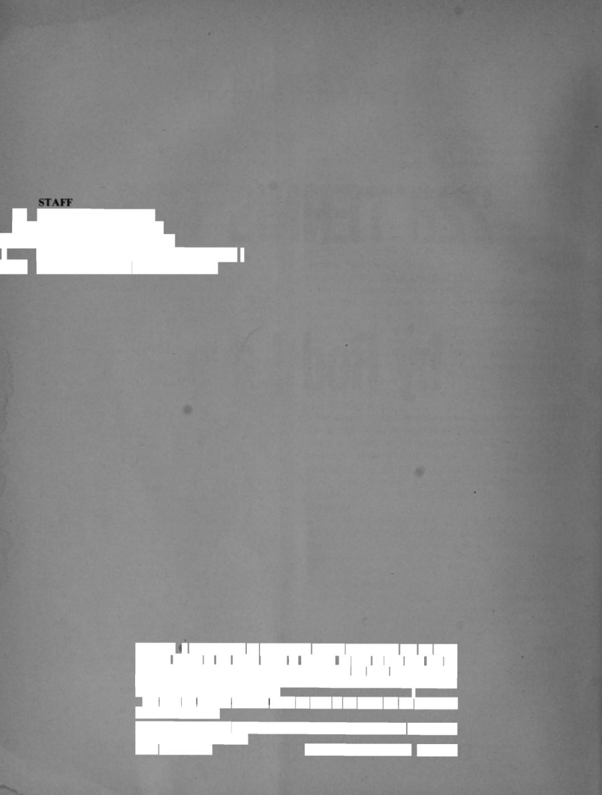
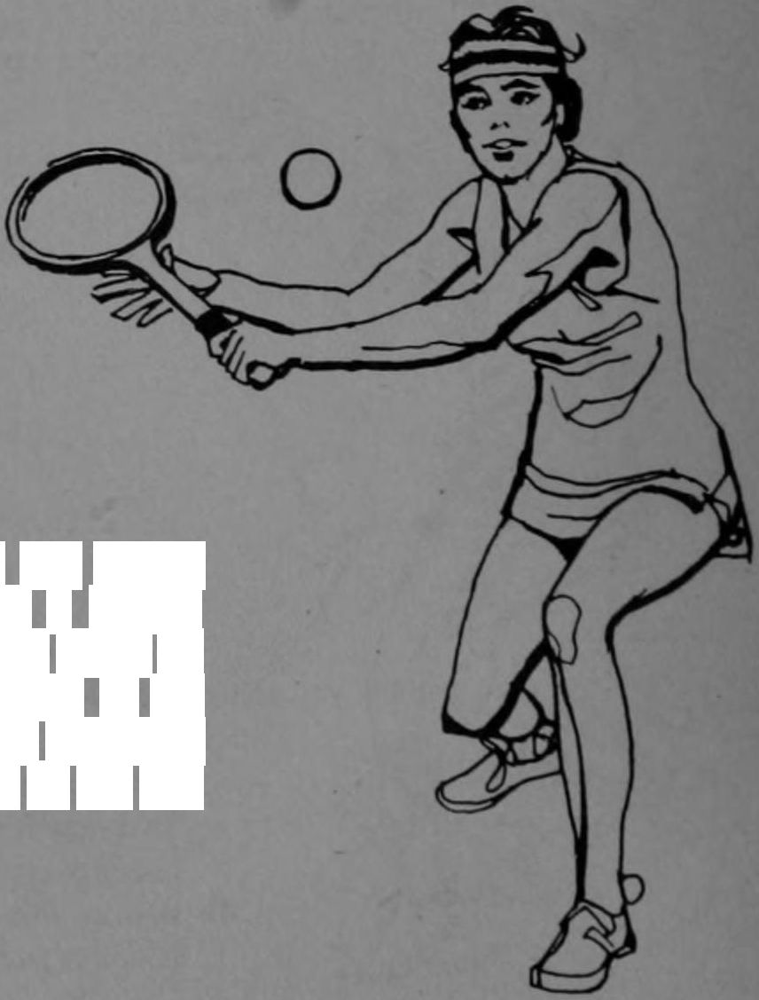
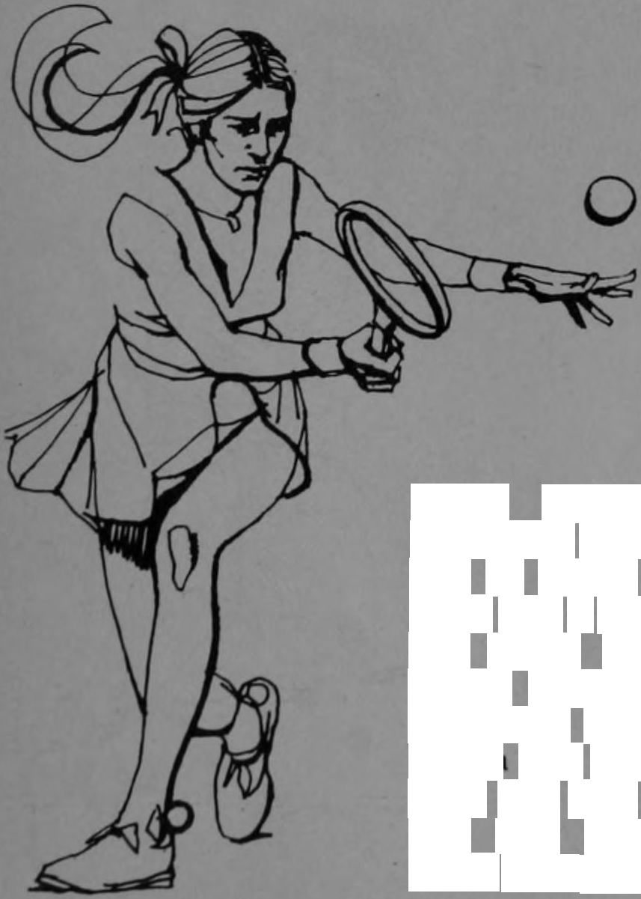
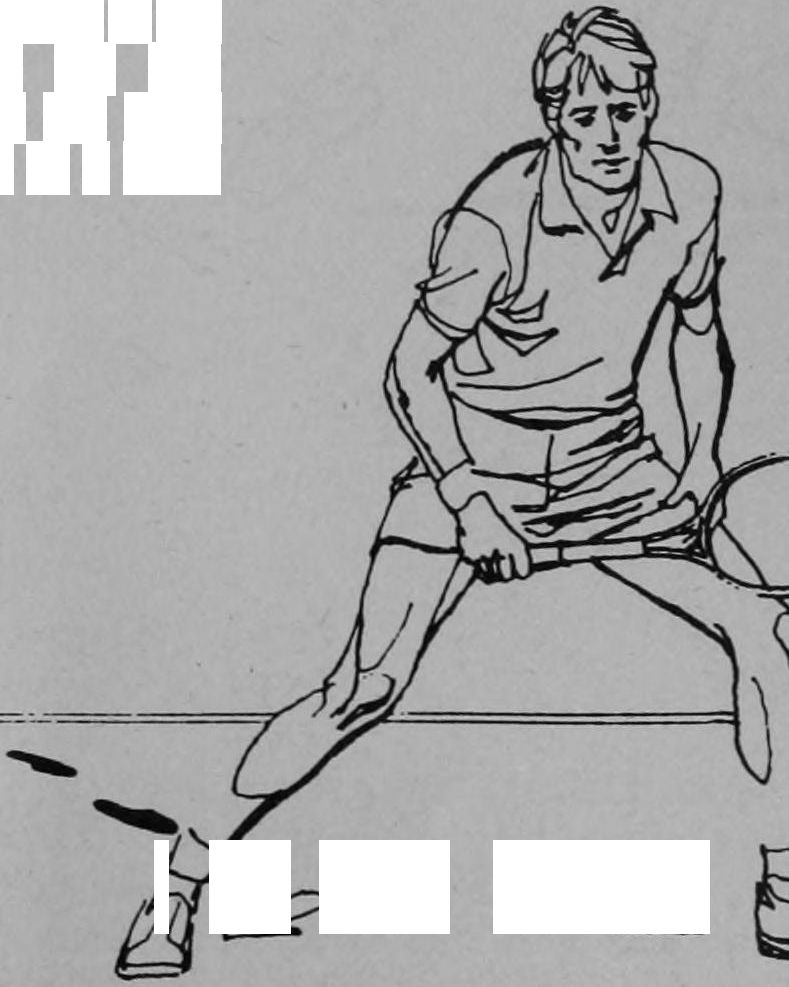
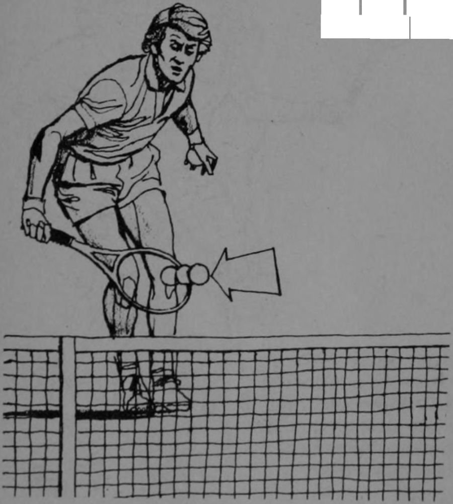
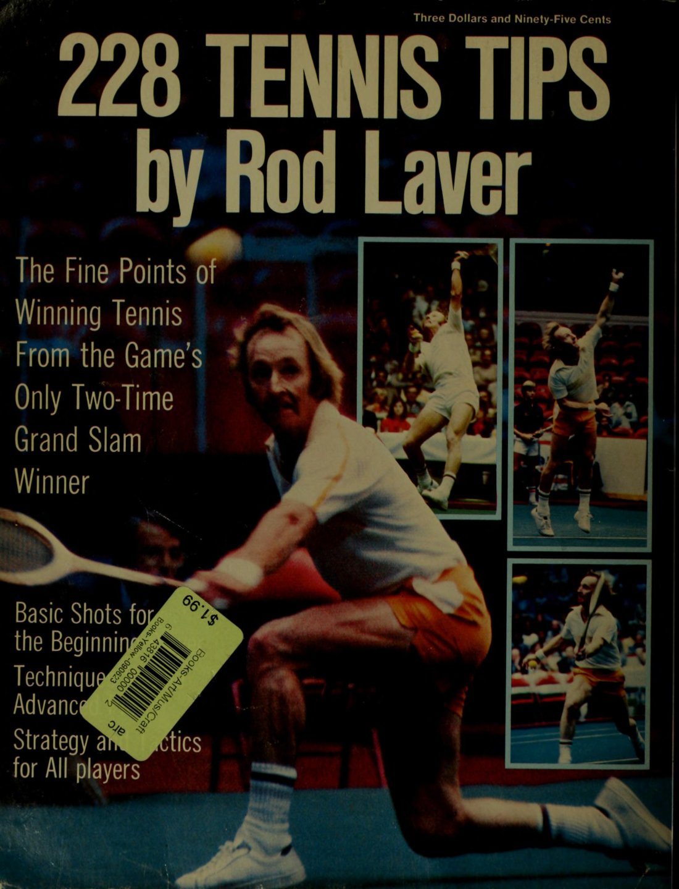

228 Mẹo Tennis

Bản dịch Việt ngữ này chỉ dùng cho mục đích học tập cá nhân, phi thương mại. Bản quyền tác phẩm gốc thuộc về tác giả và nhà xuất bản.
228 Mẹo Tennis


VỀ ROD LAVER Các chuyên gia quần vợt hàng đầu thế giới đều đồng tình ở một điểm—Rodney Laver là một trong những tay vợt vĩ đại nhất trong lịch sử môn thể thao này, nếu không muốn nói là vĩ đại nhất.
ABOUT ROD LAVER The world’s leading tennis authorities do agree on one point—Rodney Laver is one of the greatest players in the history of the game, if not the greatest.
Ông đã thống trị tuyệt đối trên các sân đấu trung tâm của thế giới như chưa tay vợt nào trước ông, và tay vợt thuận tay trái tóc đỏ người Úc này không có dấu hiệu nào từ bỏ vị thế dẫn đầu của mình.
He has ruled supreme on the center courts of the globe as no man before and the red-headed lefthander from Australia shows no signs of relinquishing his leading position.
Vào năm 1959, chỉ ba năm sau chuyến đi đầu tiên ra nước ngoài của ông, Laver trở thành một tay vợt đẳng cấp thế giới khi lọt vào chung kết Wimbledon. Trong ba kỳ Wimbledon liên tiếp tiếp theo, ông đều là một trong những người vào chung kết, giành những danh hiệu danh giá vào năm 1961 và 1962.
In 1959, just three years after his first trip outside Australia, he became a world class player by reaching the finals at Wimbledon. During each of the three suc-ceeding Wimbledon events, he was a finalist, winning the prestigious titles in 1961 and 1962.
Những thành tựu của Rod trong năm 1962 đã làm kinh ngạc giới quần vợt. Bốn giải vô địch lớn nhất thế giới là Úc, Pháp, Anh (Wimbledon) và giải Hoa Kỳ (Forest Hills). Chỉ có hai tay vợt từng giành cả bốn giải trong một năm và hoàn thành “Grand Slam.” Don Budge làm được điều đó vào năm 1938—năm Laver ra đời. Rod đã quét sạch bốn sân đấu lớn hai lần, đầu tiên với tư cách nghiệp dư vào năm 1962, và sau đó, vào 1969 với tư cách chuyên nghiệp ký hợp đồng với World Championship Tennis.
Rod’s accomplishments in 1962 astounded the tennis world. The four major championships of the world are Australia, France, England (Wimbledon) and the United States (Forest Hills). Only two players have been able to win all four in one year and complete the “‘“Grand Slam.’’ Don Budge did it in 1938—the year Laver was born. Rod has swept the four major courts clean twice, first as an amateur in 1962 and, then, in 1969 as a contract professional with World Champion-ship Tennis.
Ông chuyển sang thi đấu chuyên nghiệp sau mùa giải 1962 xuất sắc. Đến năm 1965, ông đã thống trị làng chuyên nghiệp hoàn toàn giống như ông từng thống trị giới nghiệp dư. Hơn nữa, vào thời điểm đó ông đã chiếm giữ vị trí tay vợt xuất sắc nhất mọi thời đại của môn này. Trong năm 1971, Laver trở thành triệu phú đầu tiên của quần vợt, khi tổng tiền thưởng trọn đời của ông tính đến thời điểm đó đã tăng lên $1.006.947.
He turned professional following his spectacular 1962 season. By 1965, he was dominating the professional ranks as totally as he previously had dominated the amateurs. Moreover, by this time he had assumed his position as the game’s No. | all-time player. During 1971, Laver became tennis’ first millionaire, as his lifetime winnings at that point were boosted to $1,006,947.
Khi nói về lối chơi mà Rod đã sử dụng để xác lập kỷ lục đáng kinh ngạc của mình, người ta nghĩ đến từ “sự linh hoạt.” Nói một cách đơn giản, Rod có khả năng kiểm soát tốt hơn với một kho tàng đa dạng hơn các cú đánh, góc, tầm và tốc độ so với bất kỳ ai từng chơi môn này.
In characterizing the game which Rod has utilized to complete his incredible record, one thinks of the term “‘versatility.’’ To put it simply, Rod has a greater com-mand over a wider assortment of shots, angles, spans and speeds than anyone who has ever played the game.
Ông có thể dựa vào lối chơi hung hãn, áp đảo hoặc một lối chơi phòng ngự, khéo léo, điều khiển nhịp độ. Ông có thể thích nghi nhanh với lối chơi của đối thủ, và đối phó bằng một lối chơi phản công hiệu quả nhất. Do sự linh hoạt, không phải hiếm khi thấy ông thua set đầu tiên—thậm chí có thể hai set đầu—của một trận đấu và sau đó lội ngược dòng để đè bẹp đối thủ.
He can rely on either aggressive, overpowering style or a tactful, defensive, manipulative game. He is able to ad-just to his opponent’s style quickly, and to counter it with a style that will most effectively combat it. As a result of his flexibility, it is not a rarity to see him drop the first—possibly even the first two—sets of a match and then come back to destroy his rival.
Hướng dẫn: Rod Laver Minh họa: Jim Jonson Ảnh bìa: Arthur Shay ‘ Biên tập sản xuất: Pamela J. Johnson — _ Giám đốc xuất bản liên kết: Sheldon L. Factor Bản quyền © MCMLXXVII của International Literary Management, Inc. Mọi quyền được bảo lưu, In tại Hoa Kỳ. Không phần nào của sách này được sao chép, lưu trữ trong hệ thống truy xuất hoặc truyền tải dưới bất kỳ hình thức hay phương tiện nào, điện tử, cơ khí, photocopy, ghi âm, hay phương tiện nào khác, mà không có văn bản cho phép trước của chủ bản quyền. ‘ Các quan điểm và ý kiến nêu trong sách là của tác giả và không nhất thiết là của nhà xuất bản.
Instruction by Rod Laver Illustrations by Jim Jonson Cover Photos by Arthur Shay ‘ Editorial Production by Pamela J. Johnson — _ Associate Publisher: Sheldon L. Factor Copyright © MCMLXXVII by International Literary Management, Inc. All rights reserved, Printed in the United States of America. No part of this book may be reproduced, stored in a retrieval system or transmitted in any form, or by any means, electronic, mechanical, photocopying, recording, or otherwise, without the prior writ-ten permission of the copyright holder. ‘ The views and opinions contained herein are those of the author and not necessarily those of the publisher.
Được xuất bản bởi DBI Books, Inc., công ty con của Technical Publishing Co., 540 Frontage Rd., Northfield, Illinois 60093 ISBN 0-695-80716-1 Thư viện Quốc hội Hoa Kỳ, mục lục #76-50752
Published by DBI Books, Inc., a subsidiary of Technical Publishing Co., 540 Frontage Rd., Northfield, Illinois 60093 ISBN 0-695-80716-1 Library of Congress Catalog #76-50752

HÃY CẦM VỢT THẬT CHẶC! Nếu bạn thả lỏng cán vợt, bạn không thể kiểm soát quả bóng. Khi một quả bóng được đánh mạnh chạm vào dây vợt, nó sẽ bật điên cuồng nếu bạn cầm lỏng. Đừng dùng cổ tay lẫy ngoại trừ khi giao bóng và đập bóng—hãy tập đánh những cú chạm đất với cổ tay khóa. Cổ tay và ngón tay phải chắc nhưng cánh tay thì thả lỏng.
LET'S TAKE A FIRM GRIP ON THE RACKET! If you relax your grip, you cannot control the ball. When a firmly hit ball strikes the strings of your racket it will re-bound wildly if your grip is relaxed. Do not use wrist snap except on the serve and overhead—practice hitting ground strokes with a locked wrist. Wrist and fingers are firm but the arm is relaxed.
ĐỪNG CHẠY VÒNG QUA TRÁI!
STOP RUNNING AROUND YOUR BACKHAND!
Cú trái về nhiều mặt là mặt tự nhiên hơn. Chắc chắn thoải mái hơn khi vung xa khỏi cơ thể thay vì ngang qua cơ thể như khi đánh thuận tay.
The backhand action is in many ways the more natural side. It is definitely more comfortable to swing away from the body rather than across the body, as you do with a forehand.
Hãy xoay ngang người với lưới. Đưa vợt ra sau sớm. Chuyển trọng lượng vào cú đánh. Vượt qua sự tự ti về cú đánh này đi!
Get sideways to the net. Get your racket back early. Get your weight into the shot. Get over your bloody inferiority complex about this shot!
PHÁT TRIỂN SỰ TẬP TRUNG—HÃY HỌC CÁCH NHÌN QUẢ BÓNG ĐẾN TẬN MẶT VỢT! Cú vô-lê của bạn sẽ tốt hơn nếu bạn giữ khuỷu tay thu nhẹ vào trong và cúi người đưa đầu gần hơn với đường bay của quả bóng. Giờ hãy đấm xuyên qua quả bóng bằng cán vợt nắm chặt và cổ tay vững.
DEVELOP CONCENTRATION—LEARN TO WATCH THE BALL ALL THE WAY ONTO THE RACKET! Your volley will improve if you keep your elbow tucked in slightly and bend forward putting your head closer to the trajectory of the ball. Now punch directly through the ball with a tight grip and firm wrist.
Chuyển trọng lượng lên chân trước.
Move your weight onto the front foot.
HÃY CẨN THẬN VỚI CÁC CÚ ĐÁNH DÙNG CỔ TAY! Tôi gợi ý rằng bạn tập đánh các cú chạm đất với cổ tay khóa.
BE CAREFUL OF WRISTY SHOTS! I suggest that you practice hitting groundstrokes with a locked wrist.
Hãy tập trung vào ý tưởng rằng một khi vợt bắt đầu đi tới gặp bóng, cổ tay bạn sẽ hoàn toàn vững!
Concentrate on the idea that once your racket starts for-ward to meet the ball, your wrist will be absolutely firm!
Bạn phải học cách đánh cả cú thuận tay và cú trái chạm đất với ngón tay và cổ tay vững trước khi thêm các cú dùng cổ tay vào kho vũ khí.
You must first learn to stroke both forehand and backhand groundstrokes with firm fingers and wrist before adding wrist shots to your arsenal.
CẦN GIÚP VỚI NHỮNG CÚ THUẬN TAY DI CHUYỂN?
NEED HELP ON THOSE MOVING FOREHANDS?
Rút ngắn cú đưa vợt ra sau và khi bạn tiến tới bóng, hãy giữ đầu cúi thấp gần hơn với đường bay của quả bóng đang tới. Đưa vợt xuyên qua mà không lẩy cổ tay, và duỗi theo hướng bạn muốn hướng cú đánh. Đừng ngẩng đầu lên!
Shorten your backswing and as you go to the ball keep your head down closer to the trajectory of the ap-proaching ball. Bring the racket through without flick-ing your wrist and extend in the direction you wish to direct the shot. Do not pull up with your head!
BẠN SẼ PHẢI LÀM NHIỀU HƠN LÀ CHỈ ĐÁNH BÓNG—Hãy thăm dò điểm yếu của đối thủ và khi tìm ra, hãy nhắm thẳng vào nó.
YOU’RE GOING TO HAVE TO DO MORE THAN JUST HITTING THE BALL—Probe for your oppo-nent’s weakness and when you discover it zero in on it.
Di chuyển anh ta khắp sân rồi đánh vào điểm yếu và tiến vào để kết liễu. Duy trì cách này miễn là nó đang mang lại chiến thắng cho bạn.
Move him around the court then hit to his weakness and move in for the kill. Maintain this pattern as long as it is winning for you.


OK, CÁC CÔ, HÃY GIÀNH CHIẾN THẮNG TRẬN TIẾP THEO VỚI NHỮNG CÚ TẠT BÓNG BỔNG ĐÁNH ĐẸP! Cú tạt bổng là một vũ khí nguy hiểm, ngay cả trước những tay vợt lão luyện. Nó khiến họ mất tự tin ở lưới và gây ra những lỗi—hãy đánh quả bóng nhẹ nhàng, nhưng bằng một nhịp đánh trọn vẹn. Đi lên xuyên qua quả bóng với mặt vợt mở. Hãy giữ bóng thật sâu!
OK, GALS, LET’S WIN THE NEXT ONE WITH SOME WELL-HIT LOBS! The lob is a dangerous weapon, even against polished players. It makes them insecure at the net and brings on errors—hit the ball gently, but with a full stroke. Come up through the ball with the face open. Keep it deep!
BẠN KHÔNG CẦN PHẢI Ở TRÊN SÂN MỚI TẬP LUYỆN! Hãy ra ngoài sân sau cùng một người bạn cùng muốn cải thiện. Tìm một khu vực tương đối bằng phẳng và đứng cách nhau 10 thước. Giờ để cải thiện cảm giác cầm vợt và kỹ thuật vô-lê của bạn.
YOU DON’T HAVE TO BE ON A COURT TO PRACTICE! Get out in your yard with a fellow player who wants to improve. Find a fairly level area and position yourselves 10 yards apart. Now to improve your racket feel and volleying technique.
Chơi quả bóng lùi và lại, đặt quả bóng cẩn thận cho f= người đánh cùng trên không trung. Chú ý kỹ thuật bước chân và giữ cổ tay vững để phát triển sự kiểm soát tốt!
Play the ball back and forth, carefully placing the ball to your f= partner on the fly. Mind your foot-work and keep your wrist firm to develop good control!
BẠN CÓ THỂ ĐÁNH MỘT CÚ ĐẬP BÓNG HIỆU QUẢ TRONG KHI LÙI LẠI KHÔNG? Với những cú tạt bổng sâu, bạn thường phải đánh trong khi đang di chuyển lùi lại và nhảy lên không trung. Hãy tập— bước nhanh ra phía sau bằng chân phải.
CAN YOU HIT AN EFFECTIVE SMASH WHILE BACKING UP? On deep lobs you will often have to hit while mgving backwards and jumping into the air. Prac-tice stepping quickly to the rear with your right foot.
Tiếp theo đẩy bằng chân phải rồi nhảy lên và lùi, tiếp đất bằng chân trái khi bạn vung. Động tác đá kéo này sẽ giúp bạn hiệu quả hơn nhiều với tư cách một người đánh đôi.
Next push off your right foot and jump up and back, landing on the left foot as you swing. This scissors kick action will allow you to be much more effective as a doubles partner.


Ps ' i a CÓ PHẢI KỸ THUẬT BƯỚC CHÂN LÀ VẤN ĐỀ LỚN CỦA BẠN? Khi phản ứng với một quả bóng đang di chuyển, việc có đôi chân nhanh nhẹn là điều hoàn toàn cần thiết. Những tay vợt giỏi hơn không bao giờ đứng chôn chân khi họ tiến tới bóng. Nếu bóng nảy lắt léo hoặc trượt vào người bạn hay xa khỏi bạn, hãy khéo léo và di chuyển thân mình mệt mỏi một cách nhanh chóng. Nó có thể tạo nên sự khác biệt!
Ps ‘ i a MAYBE FOOTWORK IS YOUR BIG PROBLEM? In reacting to a moving ball it is absolutely essential to be quick footed. The better players are never flat-footed as they approach the ball. If the ball takes a funny bounce or skids into you or away from you, be nimble and move your tired body quickly. It can make the difference!
KHI BẠN TIẾN VÀO LƯỚI—Đừng đợi quả bóng vượt qua lưới mới chuẩn bị cho cú vô-lê! Hãy đọc góc đi của bóng ngay khi nó rời vợt của đối thủ và lập tức bắt đầu di chuyển vợt vào vị trí để đánh vô-lê.
WHEN YOU APPROACH THE NET—Do not wait for the ball to cross over the net to prepare for the volley! Read the angle of the ball as it leaves your oppo-nent’s racket and immediately start to move your racket into position for the volley.
HÃY TẬP VỚI MỘT NGƯỜI BẠN Ở TỐC ĐỘ NỬA—Điều này không có nghĩa là dùng nửa nhịp đánh.
TRY PRACTICING WITH A FRIEND AT HALF SPEED—This does not imply using half a stroke.
Đánh bóng trọn vẹn nhưng làm chậm nhịp vung. Hãy làm việc vào nhịp điệu và thời điểm của cú đánh. Cố gắng có kỹ thuật bước chân hoàn hảo. Trượt bóng thường có thể khắc phục ở nhịp độ chậm hơn này. Hãy quan sát đường bay của quả bóng và thiết lập tư thế theo đó.
Stroke the ball fully but slow down the swing. Work on the rhythm and timing of the shot. Attempt to get perfect footwork. Mis-hitting can usually be overcome at this slower tempo. Watch the trajectory of the ball and set up accordingly.



HÃY ĐƯA KHUỶU TAY LÊN CAO! Tôi thấy rất nhiều cú đập bóng trên cao kiểu quất ngang ở các câu lạc bộ tôi thường lui tới. Rất ít cú nào chính xác hay ổn định. Hãy chú ý cách những tay vợt giải đấu giỏi đưa khuỷu tay lên cao khi họ đưa vợt lên từ phía sau lưng.
LET’S GET THAT ELBOW UP! I see a lot of sidearm overheads at the various clubs I frequent Very few are either accurate or consistent. Note how the better tour-nament players get their elbows up as they bring the racket up from behind them.
SỰ TỰ TIN KHI TRẢ CÚ GIAO BÓNG HƠN LÀ TỐC ĐỘ!
SURENESS ON RETURN OF SERVE RATHER THAN SPEED!
Ở đánh đôi, hãy cố làm cho người giao bóng phải đoán già đoán non và do dự—một cú xắt nhẹ vào chân người giao bóng, một cú tạt bổng qua đầu người đánh cặp của anh ta, một cú chéo sân sắc bén sẽ khiến đội bên kia phải đoán già đoán non. Thỉnh thoảng một cú bắn thẳng vào người trấn lưới hoặc dọc lối đi của anh ta sẽ ngăn anh ta tranh cướp bóng.
In doubles, try to keep the server guessing and hesitant—a soft chip shot at the server’s feet, a lob over his partner’s head, a sharply angled crosscourt will keep the other team guessing. An occasional blast right at the net man or down his alley will keep him from poaching.
NẾU BẠN ĐANG HUẤN LUYỆN MỘT BẠN TRẺ—hãy bắt đầu tập giao bóng với vợt để dọc theo lưng theo tư thế gãi lưng. Quả bóng nên được giữ nhẹ trong đầu ngón tay. Thả bóng nhẹ nhàng, trực tiếp phía trước vai trái. Hãy chắc chắn quả bóng bay đủ cao để có thể bị đánh bởi cánh tay duỗi thẳng hoàn toàn!
IF YOU ARE COACHING A YOUNGSTER—start him serving with that racket held down his back in the back-scratching attitude. The ball should be held lightly in the fingertips. Release the ball gently, directly in front of the left shoulder. Be sure the ball goes high enough so as to allow it to be struck with the arm fully extended!


» ĐỪNG CHỈ ĐỨNG ĐÓ ĐỢI BÓNG!
» DON’T JUST STAND THERE WAITING FOR IT!
Hãy cố gắng di chuyển lên phía trước ở tất cả những cú vô-lê. Điều đó sẽ đưa trọng lượng của bạn vào cú đánh, ngăn quả bóng rơi quá thấp, và nói chung dọa nạt đối thủ bằng sự tự tin hung hăng như vậy.
Try to keep moving forward on all those volleys. It will get your weight into the shot, prevent the ball from dropping too low, and generally intimidate your oppo-nent by such an aggressive display of confidence.
GIỮA CÁM TAY PHƯƠNG ĐÔNG VÀ PHƯƠNG PHÁP LỤC ĐỊA, bạn sẽ tìm thấy cái gọi là cầm vợt kiểu Úc. Nó cho phép đánh nhiều loại cú nhất—bạn có thể đánh bạt, xắt, tạt bổng hoặc, với cùng một sự chuẩn bị, thực hiện một cú bỏ nhỏ đẹp với cầm vợt này.
BETWEEN THE EASTERN AND THE CONTINEN-TAL, you will find what is called the Australian grip. It allows for hitting the greatest variety of shots—you can drive it, slice it, lob it or, with the same preparation, lay in a beautiful dropshot with this grip.
ĐỪNG SỢ VƯƠN TỚI! Có những lúc một cú lao người tốt sẽ giải quyết được—hãy quyết tâm rằng bạn sẽ đưa bóng về lại bên kia lưới bất kể bạn phải chạy nước rút và vươn tới xa đến đâu. Nếu đó là một cú giao bóng nhanh và rộng, hãy bằng lòng chỉ chặn bóng lại.
DON’T BE AFRAID TO REACH! There are times when a good lunge will do the trick—make up your mind that you’re going to get the ball back over the net no matter how far you have to sprint and reach. If it’s a fast serve and wide, be content to just block the ball back.


tli ee HÃY THỬ NGHĨ ĐIỀU NÀY VỚI NHỮNG CÚ TRÁI CỦA BẠN —khi quả bóng tiến đến gần trong vòng vài tấc của vùng đánh, hãy để vai dẫn hướng chỉ vào quả bóng.
tli ee TRY THINKING OF THIS ON YOUR BACKHANDS —as the ball approaches to within a few feet of the strik-ing zone, get your leading shoulder to point at the ball.
Nếu bạn quan sát những tay vợt giỏi, bạn sẽ thấy rằng một mũi tên xuyên qua vai họ sẽ chỉ vào mục tiêu đang tới. Hãy thử xem! petitor.
If you observe the better players, you will note that an arrow extending through their shoulders would point at the approaching target. Try it! petitor.
ĐÂY LÀ MỘT MẸO NHỎ giúp bạn giữ người nghiêng ngang và tránh mở vai quá sớm khiến bạn kéo bóng thay vì đánh vượt qua nó. Hãy duỗi tay về phía trước theo hướng lưới trong lúc đưa vợt ra sau. Vung vợt xuyên qua bóng, duỗi về phía trước cho đến khi cán vợt chạm tay kia.
HERE’S A TRICK to help you stay sideways and keep from opening your shoulders too soon causing you to pull the ball instead of stroking it. Extend your hand forward in the direction of the net during your back-swing. Swing your racket through the ball extending forward until handle reaches other hand.
ĐÔI KHI, CÁC CÔ, BẠN PHẢI VẬT LỘN!
SOMETIMES, GALS, YOU HAVE TO SCRAMBLE!
Dù bạn đã chăm chút các cú đánh của mình đến đâu, sẽ có những lúc chỉ một bùng nổ năng lượng và một cú lao người mới cứu được điểm. Thể lực lúc đó sẽ tạo nên sự khác biệt. Bạn tốt hơn nên dành thời gian chạy và tập thể dục dụng cụ nếu muốn trở thành một tay vợt giỏi x
Despite all the grooming you’ve done on your strokes there will be times when only a burst of energy and a lunge will save the point. Conditioning then will make the difference. You had better spend some time running and doing calisthenics if you want to be a good com-x


BẠN MUỐN CẢI THIỆN CÚ ĐẬP BÓNG TRÊN CAO? Một điều kiện tiên quyết cho một cú đập bóng trên cao tốt là để bên trái cơ thể hướng về lưới. Một điều nữa là bảo đảm hai chân đứng thoải mái cách xa nhau. Đừng dùng nhiều nhịp đưa vợt ra sau. Hãy tưởng tượng quả bóng là một cái đinh ở điểm cao nhất bạn với tới. Đập nó bằng một nhịp đánh mạnh hướng xuống. Nếu đó là cú tạt bổng ngắn, hãy kết thúc điểm!
WANT TO IMPROVE YOUR OVERHEAD? One re-quisite to a good overhead is that your body’s left side is to the net. Another is to be sure the feet are comfortably apart. Do not use much backswing. Imagine the ball is a nail at the highest point you can reach. Pound it with a hard downward stroke. If it’s a short lob, end the point!
ĐỪNG LUÔN CHƠI CÙNG MỘT CÚ ĐÁNH! Nếu bạn thấy mình luôn đánh cùng một cú trong một tình huống cụ thể, ngay cả đối thủ chậm chạp nhất cũng sẽ bắt bài được lối chơi của bạn. Hãy dùng một số cú thay đổi. Thay đổi chiến thuật. Hãy dùng một chút trí tưởng tượng, nó sẽ được đền đáp. TẠI SAO BẠN KHÔNG NHÌN QUẢ BÓNG? Bạn có
DON’T ALWAYS PLAY THE SAME SHOT! If you find yourself always hitting the same shot in a particular situation, even the slowest witted opponent will catch on to your game. Use some change-ups. Vary your tactics. Use some imagination, it will pay off.
nhìn nó suốt đường đi đến điểm tiếp xúc không? Chính quả bóng mới đòi hỏi sự chú ý của bạn. Sân thì không di chuyển! Hãy đánh bại cơn thôi thúc muốn liếc nhanh một cái vào phút
WHY DON’T YOU WATCH THE BALL? Do you watch it all the way to the point of contact? It’s the ball that demands your attention. The court is not moving!
cuối để xem đối thủ đang đi đâu. Nó chỉ gây ra rất nhiều cú trúng khung vợt. Ai cần những cú đó cơ chứ, phải không?
Defeat that desire to grab a quick look at the last mo-ment to see where your opponent is going. It will only cause a lot of wood shots. Who needs these, right?


ia ah aa HÃY HẠ ĐẦU GẦN QUẢ BÓNG HƠN!
ia ah aa GET YOUR HEAD DOWN CLOSER TO THE BALL!
Bạn không thể đưa đầu vợt vào một cách nhất quán quả bóng trừ khi bạn hạ mắt xuống gần hơn với mặt phẳng đường bay của quả bóng. Hãy hạ thấp để nhìn rõ hơn mục tiêu. Có một ảnh hưởng mạnh mẽ đến sự định thời tốt nhờ sự tập trung bằng thị giác.
You can’t bring the racket head consistently into the ball unless you bring your eyes down closer to the plane of the ball’s trajectory. Get down to better sight the target. There is a strong influence on good timing brought about by visual concentration.
DÀNH CHO NHỮNG NGƯỜI ĐÁNH BẰNG HAI TAY— vì nhịp vung rất gọn gàng mà việc dùng cả hai tay đòi hỏi, bạn có thể thấy tầm với bị hạn chế ở những cú đánh rộng. Hãy tính đến việc phải bước thêm một bước so với bình thường để tới được bóng. Điều này đòi hỏi đọc bóng ngay khi nó rời vợt của đối thủ.
FOR YOU TWO-HANDED STROKEMAKERS— because of the very compact swing demanded by using both hands, you may find your reach restricted on wide shots. Figure on having to take one more step than usual to get up to the ball. This will require reading the ball as soon as it leaves your opponent’s racket.
HÃY TẬP CHẠY ĐUỔI NHỮNG CÚ TẠT BỔNG SÂU KHÓ NHẰN—hãy cố vươn tới khi bạn kịp với chúng và bằng một chút động tác cổ tay ném lên một quả bóng bay cao sâu sẽ cho bạn thời gian để phục hồi vị trí sân tốt và chuyển sang tấn công.
PRACTICE RUNNING DOWN THOSE TOUGH DEEP LOBS—try to reach out when you catch up with them andwith some wrist action throw up a deep high trajectory ball that will give you time to recover good court position and get on the offense.


HÃY THỐI MỘT CHÚT SỰ GIẬN DỮ VÀO NHỮNG CÚ VÔ-LÊ!
LET’S PUT SOME GROWL IN THOSE VOLLEYS!
Một cú đấm trực diện vào mũi—đó chính là cú vô-lê. Một cái đâm nhanh gọn với hầu như không nhịp đưa vợt ra sau. Cổ tay vững khi bạn đấm và bạn dùng tốc độ từ cú đánh của đối thủ. Bạn muốn vát vợt hơi nghiêng sao cho bạn đánh hơi ở dưới quả bóng để tạo ra một chút xoáy xuống giúp bạn kiểm soát tốt hơn. Hãy bước tới để có thêm sức đấm!
A good punch in the nose—that’s the volley. A short swift jab with almost no backswing. The wrist is firm when you punch and you use the pace from your oppo-nent’s shot. You want to bevel the racket slightly so that you’re hitting slightly under the ball to create some underspin which will give you more control. Step for-ward for extra punch!
MỘT SỐ ĐIỂM QUAN TRỌNG HƠN NHỮNG ĐIỂM KHÁC! Nếu trận đấu ngang ngửa, hoặc bạn dẫn trước—nhưng đang mệt—bạn sẽ không cố quá sức cho điểm 40-0, hay điểm 0-40. Nhưng điểm trong một trận sát nút đưa bạn đến điểm game—như 15-30—phải được chơi với quyết tâm lớn. Hãy cố gắng thắng game đầu tiên của mỗi set.
CERTAIN POINTS ARE MORE IMPORTANT THAN OTHERS! If the match is even, or you’re ahead—but tiring—you won’t try so hard for a 40-0 point, or a 0-40 point. But the point in a close match that will take you to game point—such as 15-30—must be played with great determination. Try hard to win the first game of every set.
NẾU BẠN CÓ MỘT PHẦN XOAY VAI TỐT Ở NHỊP ĐƯA VỢT RA SAU, NÓ SẼ NẰM DƯỚI CẰM. Khi bạn xoay và đưa vợt ra sau, hãy kéo vai vòng qua bằng hai tay để rất ý thức về vai dưới cằm của bạn trong khi bạn nhìn quả bóng đang tới.
IF YOU HAVE A GOOD SHOULDER TURN ON YOUR BACKSWING, IT WILL BE UNDER YOUR CHIN. As you turn and take the racket back, pull the shoulder around with your hands so as to be very aware of your shoulder under your chin while you watch the approaching ball.


HÃY THẢ LỎNG! THẬT SỰ ĐƯA VỢT LÊN CAO! Khi bạn bắt đầu đưa vợt xuyên qua trong cú giao bóng, bạn phải đưa khuỷu tay cao để có nhịp roi tạo nên sự bật nhanh cho động tác. Hãy trì hoãn mở cổ tay cho đến phút cuối!
LOOSEN UP! REALLY GET IT UP HIGH! As you start to bring the racket through on your serve you must get your elbow high to allow for the whip action that gives the snap to your movement. Delay uncocking your wrist ’till the /ast moment!
DÀNH CHO CÁC VẬN ĐỘNG VIÊN TRẺ—hầu hết người trẻ cố đánh bóng quá mạnh—điều thiết yếu là phát triển sự kiểm soát, độ sâu và độ chính xác. Để phát triển điều này, người ta nên luyện một nhịp vung dài, mượt mà, nhẹ nhàng từ một tư thế đứng nghiêng vững chắc với lưới. Những cú chạm đất hiệu quả đòi hỏi một nhịp đánh theo sau dài.
FOR JUNIOR PLAYERS—most youngsters try to hit the ball too hard—it is essential to develop control, depth and accuracy. To develop this, one should work to acquire a long, smooth, easy swing from a solid stance sideways to the net. Effective ground strokes de-mand a long follow-through.
CÁC CÔ, NẾU CÁC CÔ MUỐN CHƠI TỐT ĐÁNH ĐÔI, HÃY VÔ-LÊ GỌN GÀNG! Trọng lượng về trước, gặp bóng phía trước—khi một quả bóng nặng chạm dây của vợt, nó sẽ bay đi điên cuồng nếu cầm vợt lỏng.
LADIES, IF YOU WANT TO PLAY GOOD DOUBLES, VOLLEY CRISPLY! Weight forward, meet ball out front—when a heavy ball hits the strings of the racket, it will fly off wildly if the grip is relaxed.
Cổ tay nên vững chắc như các ngón tay.
The wrist should be as firm as the fingers.


đưa ra phía trước và duỗi cẳng tay theo hướng bạn muốn hướng quả bóng. Chỉ theo cách này bạn mới đạt được sự chính xác cũng như tốc độ. Hãy tập kiểm tra bản thân bằng cách chú ý vị trí của vợt khi kết thúc nhịp đánh.
front and extend your forearm in the direction you wish to direct the ball. Only in this way will you attain ac-curacy as well as pace. Learn to check yourself by noting the position of the racket at the completion of the stroke.
HÃY PHÁT TRIỂN MỘT LỐI CHƠI TOÀN SÂN TRÒ CHƠI!
LET’S DEVELOP AN ALI-COURT GAME!
Tại sao giới hạn bản thân là một tay vợt hạng "B" hay "C" ? Hãy mở rộng tiềm năng của bạn ngay bây giờ! Điều này đòi hỏi nắm vững tất cả các cú đánh tiêu chuẩn; cú giao bóng, cả xắt và xoáy—cú bạt, xoáy lên xoáy và xắt—cú bỏ nhỏ, tạt bổng, vô-lê và đập bóng—bạn cũng phải học cách thay đổi độ sâu—giờ thì bạn ' đã sẵn sàng!
Why limit yourself to being a “‘B”’’ or “‘C”’ level player? Expand your potential now! This requires mastering ail the standard strokes; service, both slice and twist—drive, top spin and slice—dropshot, lob, volley and smash—you must also learn to vary the depth—now you’ re ready!
ĐỪNG LUÔN ĐÁNH VỀ PHÍA SÂN TRỐNG! Đó có thể chính là nơi đối thủ đang hướng tới. Nếu bạn có thể bắt họ khi tất cả trọng lượng đang đi về một hướng, hãy đánh ngược lại về phía họ đang bận rời đi.
DON’T ALWAYS HIT TO THE OPEN COURT SIDE! That’s probably right where your opponent is heading. If you can catch them with all their weight go-ing one way, hit back to the side they are busy leaving.
Chiến thuật này gọi là làm đối thủ bước hụt và những tay vợt giỏi thường dùng nó.
This tactic is called wrong-footing your opponent and better players use it often.


HÃY ĐƯA TRỌNG LƯỢNG VÀO CÚ ĐÁNH—=< docs? cần một sức mạnh lớn để đánh những cú trái có độ sâu và tốc độ, chỉ là khả năng chuẩn bị nhanh chóng để cho phép một sự chuyển trọng lượng tốt lên chân trước khi bạn gặp quả bóng.
GET YOUR WEIGHT INTO THE SHOT—=< docs? take ereat streneth to hii backhands that have depth and pace, just the ability to set up quickly so 2s 10 allow for a good transfer onto the fromt foot 2s you mect the ball.
Giữ khuỷu tay thấp và bạn sẽ dễ dàng hơn để NẾU BẠN MUỐN QUẢ BÓNG RƠI XUỐNG THẬT NGẮN «b= bạn di chuyển vào vô-lê, hãy đưa mặt vợt hướng xuống xuyên qua quả bóng với một động tác cổ tay nhẹ. Giữ mặt vợt mở và dùng cánh tay di chuyển. Dùng cú này khi đối thủ của bạn ở sâu. 'oy HÃY TẬP MỘT CHÚT VỚI CÚ TẠT BÓNG BỔNG CỦA BẠN—một 2000 cú tạt bổng là điều cần thiết cho trình độ thi đấu cao. Hãy nhớ hai điều này: bạn phải dùng một nhịp đánh mượt mà dài, giữ quả bóng trên vợt càng lâu càng tốt, và tạo ra tối đa cú đánh từ máy bắn bóng. - te a peel hie
Keep your dbow down and you will be more api 10 sw-IF YOU WANT THE BALL TO DROP QUITE SHORT «b= you move im to volley, ty pulime the racket face down throwzh the ball with a sheit wrist acon. Keep the face open and use wey tile arm movement. Use thas shot when your opponent Is dzep. ‘oy LET'S DO SOME WORK ON YOUR LOB—a 2000 lob is a necessity for top-level play. Remember these two things: you must use a lone smooth stroke, keeping the ball on the racket as long as possible, and set maximum shot off a ball machine. - te a peel hie


ĐÂY LÀ BƯỚC ĐẦU CỦA MỘT CÚ XẮT TRÁI—sự chuẩn bị đặc biệt quan trọng. Vai xoay hẳn và đầu cúi xuống. Hãy nhìn quả bóng qua vai—cổ tay cao hơn quả bóng O và đầu vợt mở ra, được giữ bằng tay trợ cao hơn cổ tay. Hãy đánh chéo sân trước cho đến khi bạn kiểm soát được!
THIS IS THE BEGINNING OF A SLICE BACK-HAND—the preparation is especially important. The shoulder is well turned and the head is down. Watch the ball over your shoulder—the wrist is higher than the ball O and the racket head is laid open and held with the sup-port hand higher than the wrist. Go crosscourt at first until you gain control!
DỪNG LẠI VÀ THIẾT LẬP TƯ THẾ! Nhiều người trong các bạn lao đầu lên lưới vô-lê ngay giữa cú chạy nước rút rồi lại s chạy quá vạch cuối sân.
STOP AND SET UP! Many of you dash headlong to net volleying in the middle of your sprint and then over-s shoot the baseline.
Bạn nên tiến nhanh vào, dừng lại, di chuyển sang trái hay phải để vô-lê rồi sau đó tiến tới để khóa đường trả bóng.
You should move in quickly, stop, move to left or right for the volley and then pro-ceed to close off the return.
CHỈ VÀO QUẢ BÓNG! Để đưa vai vào tư thế đúng khi đánh những cú đập bóng trên cao tốt. Động tác giống như cú giao bóng, nhưng nhịp đưa vợt ra sau nên ngắn hơn. Hãy đánh bóng khá phẳng và vung xuyên qua quả bóng. Hãy nghĩ đến việc ném vợt qua lưới khi bên phải của bạn vung qua. Gặp bóng với cánh tay duỗi thẳng hoàn toàn! Hãy giữ nhịp mượt mà!
POINT AT THE BALL! To get your shoulders into the correct attitude for hitting good overheads. The motion resembles that of a serve, but the backswing should be shorter. Hit the ball fairly flat and swing through the ball. Think of trying to throw the racket over the net as your right side comes through. Meet the ball with your arm fully extended! Keep it smooth!


PS ee i wn ee eee eee se HÃY TẬP SỰ NHẸ NHÀNG VÀ THĂNG BẰNG KHI DI CHUYỂN! Hãy xem những tay vợt giải đấu phủ sân như thế nào— những tay vợt giỏi hơn bay lượn quanh sân khiến những cú đánh khó nhất trông có vẻ dễ dàng. Hãy hạ thấp, giữ đầu gối cong và dùng tay trái để giữ thăng bằng. Đừng đánh quá mạnh ở những cú chạy!
PS ee i wn ee eee eee se WORK FOR GRACE AND BALANCE WHEN MOV-ING! Watch how the tournament players cover court— the better players float around the court making the most difficult shots look easy. Stay down, keep your knees bent and use your left arm for balance. Don’t overhit on the running shots!
GẶP KHÓ KHĂN KHI GIAO BÓNG? Có thể là do cú tung bóng—nhiều người trong các bạn dành khá nhiều giờ mỗi tuần trên sân để tìm hiểu tại sao cú giao bóng của mình lại thay đổi nhiều khi thi đấu. Bạn dường như không tìm thấy nhịp vung có rãnh như ở những tay vợt giỏi—cú tung bóng là phần quan trọng trong một động tác giao bóng ổn định. Hãy cố di chuyển cánh tay trái thẳng xuống từ vị trí xuất phát rồi lên, giữ nó duỗi thẳng khi bạn tung. Đừng để nó trôi sang trái hay phải. Giữ lòng bàn tay ngửa!
HAVING PROBLEMS SERVING? It’s probably your toss—many of you spend quite a few hours weekly on the court attempting to discover why your serves vary so during play. You never seem to find that grooved swing that you observe in the better players—the toss is the critical part in a consistent service action. Try to move the left arm straight down from the starting position and then up, keeping it extended as you toss. Do not let it float to the left or right. Leave the palm upward!
ĐỪNG LUÔN ĐÁNH CÙNG MỘT CÚ TỪ CÙNG MỘT VỊ TRÍ TRÊN SÂN! Hãy rèn luyện để rất ý thức vị trí của đối thủ khi bạn tiến tới bóng. Quả bóng. Anh ta có quá sâu không? Anh ta đang tiến vào? Anh ta có đang phục hồi từ ngoài đường biên không? Sự nhận thức chính là cốt lõi của cảm giác sân. Hãy phát triển nó!
DON’T ALWAYS HIT THE SAME SHOT FROM THE SAME COURT POSITION! Train yourself to be very aware of your opponent’s position as you approach the ball. Is he too deep? Is he moving in? Is he recover-ing from outside the sideline? Awareness is what court sense is all about. Develop it!


TIẾN VÀO LƯỚI—việc tới được lưới thành công phụ thuộc vào một cú bước vào sâu và đặt chính xác để buộc đối thủ trả bóng yếu. Hầu hết những người vô-lê giỏi thích cầm vợt lục địa hay cầm vợt trái, giúp có mặt vợt hơi mở, cần thiết để nâng những quả bóng thấp. Cú vô-lê đầu tiên này nên được đặt sâu trong sân!
APPROACHING THE NET—eetting to the net suc-cessfully depends upon an approach shot that is deep and accurately placed to force a weak return. Most good volleyers prefer the continental or backhand grip which allows for a slightly open face, necessary to lift low balls. This first volley should be placed deep in court!
Hãy nhắm độ sâu và độ chính xác ở cú vô-lê đầu!
Go for depth and accuracy on the first volley!
NÀO, CÁC CÔ, HÃY CỐ GẮNG ĐỨNG NGANG QUA SÂN SO VỚI NGƯỜI ĐÁNH CẶP CỦA BẠN. Khi anh ta lùi lại từ lưới để đánh một cú đập bóng trên cao, hãy lùi cùng anh ta nếu không sẽ có một khoảng trống giữa bạn và người đánh cặp, nơi đối thủ đối diện với người đánh cặp có thể ghi điểm bằng một cú chéo góc. Cả hai nên trở lại vị trí lưới tốt ngay sau khi cú đập bóng trên cao được thực hiện.
C’MON GALS, TRY TO STAY ACROSS THE COURT FROM YOUR PARTNER. When he backs up from the net to hit an overhead smash, back up with him or there will be a gap between you and your partner where the opponent facing your partner can put away an angled shot. Both of you should return to a good net position immediately after the overhead is hit.
CÚ ĐẬP BÓNG TRÊN CAO CỦA BẠN Ở ĐÂU? Bạn nên có một cú đập bóng trên cao tốt nếu định tấn công lưới và có thể kết thúc điểm bằng nó! Hãy có một động tác cổ tay tốt ở đỉnh nhịp vung. Đưa đầu vợt về trước và xuống. Hãy kiểm tra xem cán vợt có chỉ lên trên khi bạn hoàn thành. Sẽ giúp nếu bạn nhìn quả bóng lâu hơn một chút!
WHERE’S YOUR OVERHEAD? You should have a good overhead smash if you intend to attack the net and be able to end the point with it! Get a good wrist action at the top of the swing. Bring the head forward and down. Check to see if handle is pointing up as you finish. It would help if you watched the ball a bit longer!


KỸ THUẬT BƯỚC CHÂN TỐT LÀ CHÌA KHÓA cho thành công trong hầu hết các môn thể thao. Trong quần vợt có một tích tắc khi bóng và cơ thể ở đúng vị trí tương đối để truyền tốc độ và nhịp điệu vào cú đánh. Hãy dành thời gian phát triển kỹ thuật bước chân và những cú đánh khó hơn sẽ trở nên ——_-i = oP ae dễ dàng hơn. oe MỘT TƯ THẾ SẴN SÀNG THOẢI MÁI— —MỘT TỐT THOẢI MÁI tư thế sẵn sàng nghĩa là đứng với hai chân rộng bằng vai và trọng lượng đặt trên phần mũi chân. Đầu gối hơi cong. Vợt được cầm phía trước, chỉ về phía đối thủ, và có thể kéo nhanh về bất kỳ bên nào. Tư thế sẵn sàng đặc biệt quan trọng trong khi nhận giao bóng và khi chơi lưới. Hãy xem các chuyên gia vào tư thế. Vấn đề của bạn có thể chỉ là sự lười biếng—hãy giữ trọng lượng lên! Hãy sẵn sàng di chuyển.
GOOD FOOTWORK IS THE KEY to success in almost all sports. In tennis there is a split second when ball and body are in the correct juxtaposition to impart speed and pace to the stroke. Spend time developing your footwork and the more difficult shots will become ——_-i = oP ae easier. oe A COMFORTABLE READY PO-SITION—A_ good_ comfortable ready position means standing with feet apart about shoulder width and your weight on the balls of your feet. Knees are flexed. The racket is held in front, pointing at the oppo-nent, and can be drawn to either side quickly. The ready position is especially important in receiving service and in playing net. Watch the pros get into position. Your problem may be just laziness—keep your weight up! Be ready to move.
KHI BẠN ĐANG VẬT LỘN VÀ BỊ MẤT VỊ TRÍ—đừng chọn một cú đánh rủi ro cao. Hãy rèn luyện tư duy quần vợt tỉ lệ. Nếu đối thủ đã tiến vào lưới, hãy ném một cú tạt bổng cao sâu. Tạt về góc trái. Khó hơn nhiều khi phải lùi lại và di chuyển ngang sang bên trái để đánh một cú đập bóng trên cao. Nếu đối thủ đã lùi lại, hãy đánh một cú bay cao sâu khá để tự cho mình thời gian phục hồi vị trí sân tốt.
WHEN YOU’RE SCRAMBLING AND ARE OUT OF POSITION—don’t go for a high-risk shot. Train yourself to think percentage tennis. If your opponent has moved into the net, throw up a high deep lob. Lob towards the backhand corner. It’s much more difficult to back up and move across to the backhand side to hit an overhead. If your opponent has stayed back, stroke a deep fairly high trajectory shot to give yourself time to recover good court position.


KHI BẠN DI CHUYỂN VÀO ĐỂ ĐẤM CÚ | VÔ-LÊ ĐÓ, hãy đưa khuỷu tay và cổ tay vươn hẳn ra trước!
WHEN YOU MOVE IN TO PUNCH THAT | VOLLEY, get your elbow and wrist well out in front!
Điều này sẽ ngăn đầu vợt vượt lên trước bàn tay trước khi tiếp xúc và bị đánh ra ngoài sân về phía trái.
This will prevent the racket head from getting out in front of the hand before contact and being hit outside the court to the left.
HÃY NHẢY LÊN VÀ ĐỠ LẤY QUẢ BÓNG! Nếu bạn không thể lùi lại, hãy nhảy lên vì những cú tạt bổng sâu. Hãy vọt lên không trung với một động tác đá kéo và đánh bóng ở tầm với tối đa của bạn. Hãy cảm thấy mình đang ném đầu vợt về phía quả bóng. Cú này đòi hỏi sự định thời tinh tế, nhưng nó xứng đáng với nỗ lực cần có để có được cú đập bóng này!
GO UP AND GET THE BALL! If you can’t get back, get up for those deep lobs. Leap up in the air with a scissors kick and hit the ball at the full extent of your reach. Feel that you are throwing the racket head at the ball. This shot takes fine timing, but it’s worth the effort required to acquire this smash!
HÃY ĐÁNH DỌC THEO ĐƯỜNG BIÊN! Hầu hết người mới bắt đầu và những tay vợt trung cấp tôi thấy đều đánh most cú chạm đất chéo sân. Nếu bạn xoay nghiêng về lưới nhanh hơn và tập đánh xuyên qua bóng nhiều hơn, bạn sẽ không kéo mọi thứ chéo sân nữa.
GO DOWN THE LINE! Most beginners and in-termediate players I see hit most of their ground strokes cross-court. If you turn sideways to the net faster and practice hitting out through the ball more, you will not pull everything cross-court.


DỜI TRỌNG LƯỢNG KHỎI CHÂN TRƯỚC! Nào, các cô, các cô phải dời trọng lượng khỏi chân trước nếu muốn có thể bước vào bóng! Khi bạn nhanh chóng xoay nghiêng và đưa vợt ra sau ở bên thuận tay, hãy đặt trọng lượng lên chân phải, nhờ đó dời trọng lượng khỏi chân trái. Giờ bạn đã sẵn sàng để bước về phía lưới và chuyển trọng lượng vào cú đánh. Hãy tập động tác này trước gương cho đến khi nó trở thành phản xạ.
UNWEIGHT YOUR FRONT FOOT Come on, gals, you have to unweight your front foot if you want to be able to step into the ball! As you quickly turn sideways and take the racket back on the forehand side, place the weight on the right foot, thereby unweighting the left foot. Now you are ready to step toward the net and move your weight into the shot. Try practicing this move in front of a mirror until it is conditioned.
HÃY HẠ ĐẦU VÀ VAI XUỐNG VÀ VỀ PHÍA TRƯỚC NẾU BẠN MUỐN TỚI ĐÓ NHANH! Tại sao bạn cứ khăng khăng di chuyển như thể eo và đầu gối không thể cong? Hãy hạ thấp và giữ thấp khi bạn di chuyển tới bóng. Hãy tập di chuyển trên phần mũi chân. Hãy làm nhiều cú chạy nước rút ngắn. are vi dee # HÃY ĐỨNG DẬY KHỎI NHỮNG CÁI BÁNH KẾP KHI < TRẢ GIAO BÓNG! Khi nhận bóng, hãy đứng ở tư thế ngồi xổm thả lỏng, trọng lượng về trước, vợt chỉ về phía người giao bóng và hai chân rộng bằng vai. Hãy bật nhẹ ngay khi người giao bóng đánh bóng, nhờ đó làm cơ thể sẵn sàng di chuyển nhanh theo bất kỳ hướng nào. Hãy dùng một nhịp đưa vợt ra sau ngắn, phẳng.
GET YOUR HEAD AND SHOUL-DERS DOWN AND FORWARD IF YOU WANT TO GET THERE FAST! Why do you insist on mov-ing as if your waist and knees won’t bend? Get down and stay down as you move to the ball. Practice mov-ing on the balls of your feet. Do a lot of short sprints. are vi dee # LET’S GET UP OFF THOSE PANCAKES ON SERV-< ICE RETURN! When receiving, stand in a relaxed crouch, weight forward, racket pointing at server and feet shoulder width apart. Hop just as server strikes the ball, thus getting your body ready to move quickly in either direction. Use a short flat backswing.


& ĐÔI KHI CHỈ CẦN GIỮ BÓNG TRONG TRẬN ĐẤU! Hãy thừa nhận, bạn sẽ bị rơi vào tư thế lệch và mất thăng bằng. Đây là lúc cần giữ bóng trong cuộc và đừng cố ghi điểm ăn tiền. Phần lớn các điểm thắng được ghi nhờ lỗi, nên hãy cho đối thủ mọi cơ hội để mắc lỗi đó. Hãy kiên nhẫn!
& SOMETIMES IT’S ENOUGH TO JUST STAY IN THE POINT! Let’s face it, you will get caught out of position and off balance. These are the times to keep the ball in play and not try for an outright winner. By far the most points won are won on errors, so give your op-ponent every chance to make that error. Be patient!
DÙNG HAI TAY CÚ TRÁI CHO TRẺ EM— Ngày nay trẻ em bắt đầu chơi quần vợt từ rất sớm và nhiều em thấy tự nhiên khi mới đầu trợ giúp bằng tay kia. Cú trái đòi hỏi một cổ tay rất vững bởi vì có rất ít thứ sau vợt để chống đỡ lực tác động; do đó nhiều người trẻ bắt đầu dùng cú trái bằng hai tay. Khi cổ tay khỏe hơn, tay trợ giúp có thể buông ra trước khi tiếp xúc và một cú đánh vung tự do sẽ hình thành. Cú này giới hạn tầm với của một tay vợt.
TWO-HANDED BACKHAND FOR KIDS— Nowadays children are taking up tennis at a very early age and many find it natural to assist at first with the other hand. The backhand requires a very firm wrist because there is little behind the racket to brace the im-pact; therefore many youngsters start using the two-handed backhand. As the wrist gains strength the assist hand can drop away before contact and a full, free swing will result. This type shot limits the reach of a player.
KHUỶU TAY TRƯỚC, RỒI MỚI TỚI VỢT! Khi bạn giao bóng lùi vợt, khi vợt hạ xuống sau lưng, hãy đưa khuỷu tay lên và ra trước, rồi đưa vợt lên và mở cổ tay ở đỉnh để tạo thêm tốc độ đầu vợt tại điểm tiếp xúc với quả bóng.
ELBOW FIRST, THEN THE RACKET! On your serv-ice backswing, as the racket drops down behind your back, start to bring your elbow up and forward, then bring the racket up and uncock your wrist at the top to give more rackethead speed at the point of contact with the ball.


CÓ PHẢI MỘT SỐ BẠN LỚN TUỔI ĐANG GẶP CHÚT KHÓ KHĂN VỚI KHUỶU TAY? Nếu bạn đánh phần lớn các cú từ vai sau và đứng chân bẹt, bỏ qua việc chuyển trọng lượng sang chân trước, bạn đang kéo bóng, gây quá nhiều sức ép lên khuỷu tay. Hãy chuẩn bị nhanh hơn. Đón bóng phía trước!
ARE SOME OF YOU SENIORS HAVING A LITTLE ELBOW TROUBLE? If you are hitting most of your shots off the trailing shoulder and standing flat-footed, neglecting to transfer your weight to the front foot, you are pulling the ball, causing too much strain on the elbow. Try preparing faster. Meet the ball up front!
HÃY ĐỂ CÁN VỢT CHỈ VỀ PHÍA SÂN ĐỐI DIỆN— khi bạn đặt vợt cho điểm bắt đầu của cú đánh tiến tới. Tôi muốn bạn chỉ cán vợt vào vị trí . : xấp xỉ trên sân mà bạn sẽ hướng bóng tới. Quá nhiều lùi vợt có lẽ khiến bạn chậm trễ khá thường xuyên.
GET THAT HANDLE POINTED TOWARD THE OPPOSITE COURT—when you position your racket for the beginning of the for-ward stroke. I would like you to be pointing the racket handle at the ap-. : proximate spot on the court to which you will direct the ball. Too much backswing is probably making you late quite often.
NGHE NÀY, CÁC CÔ ĐỪNG LAO VÀO LƯỚI KHI CƠ THỂ MẤT THĂNG BẰNG! Cơ hội của bạn để thực hiện cú vô-lê hiệu quả khi tới đó khá mong manh. Hãy lấy quả bóng ngắn từ đối thủ và phối hợp bước tiến vào lưới với việc vào tư thế vô-lê đúng! pet
LISTEN, GALS DO NOT RUSH THE NET WITH YOUR BODY OUT OF CONTROL! Your chance of making an effective volley when you arrive there is quite remote. Take the short ball from your opponent and coordinate your approach to the net with assuming the correct volleying position! pet


TẠI SAO TÔI KHÔNG THẤY BẠN ĐÁNH CÚ BỎ NHỎ? Đây là cú nếu thực hiện đúng có thể ngụy trang đến tận phút chót. Nó hiệu quả nhất trên mặt sân chậm. Nếu quả bóng tới bạn nảy trong sân giao bóng ' và thấp, hãy nhắm vào cú bỏ nhỏ chỉ rơi cách 4 vài foot qua lưới.
WHY DON’T I EVER SEE YOU DROPSHOT? This shot, if done correctly can be disguised right up to the last moment. It is most effective on a slow surface. If the ball coming to you bounces inside the service court ’ and is low, aim for a drop shot that lands only several 4 feet over the net.
ĐỪNG CỐ XOÁY LÊN NHỮNG CÚ TRÁI CHẠY! Trừ khi trình độ bạn khá cao, tôi gợi ý bạn đánh những cú cực rộng bằng cú xắt. Hãy cố đánh một cú tốc độ trung bình chéo sân và giữ bóng sâu. Độ sâu sẽ cho bạn thời gian để phục hồi vị trí và việc đánh chéo sân giúp thu nhỏ góc tấn công của đối thủ. Hãy giữ đường bay bóng cao!
DON’T TRY TO TOPSPIN THOSE RUNNING BACKHANDS! Unless your game is quite advanced, I suggest that you play those extremely wide shots with a slice. Attempt to hit a medium pace shot cross-court and keep the ball deep. The depth will allow time for you to recover position and by going cross-court you minimize your opponent’s angle possibilities. Keep the ball trajec-tory high!
SẴN SÀNG CÁC CÔ—ĐÂY LÀ CẨM NANG TỐT CHO CÚ TRÁI CỦA BẠN—Khi lùi vợt, hãy để cán vợt chỉ hướng bạn muốn đánh bóng rồi bước vào lưới. Đưa mặt vợt vòng qua và xuyên qua bóng. Giữ cổ tay vững!
READY GALS—HERE’S A GOOD GUIDE FOR YOUR BACKHAND—On your backswing let the racket handle point in the direction you wish to hit the ball then step in toward the net. Bring the racket face around and through the ball. Keep your wrist firm!


QUÉT QUẢ BÓNG TIẾN TỚI TRONG CÚ TIẾN VÀO—Khi bạn di chuyển tới gặp cú bóng ngắn, đừng vỗ bóng. Giữ cổ tay vững và cầm vợt chắc. Đưa đầu vợt xuyên qua bóng bằng một nhát quét mượt. 'of PHÁT TRIỂN MỘT CÚ GIAO BÓNG HIỆU QUẢ! Hầu hết vấn đề giao bóng đều có thể được truy nguyên về kỹ thuật tung bóng sai. Cú tung bóng phải đi nhất quán vào cùng một điểm chính xác.
SWEEP THAT BALL FORWARD ON YOUR AP-PROACH SHOT—When you’re moving in against a short shot, do not slap at the ball. Keep a firm wrist and firm grip. Bring the head of the racket through the ball in a smooth sweep. ‘of DEVELOP AN EFFECTIVE SERVE! Most service problems can be traced to faulty ball-tossing technique. The ball toss must go consistently to the same exact spot.
Tập mang bóng lên cho tới khi tay duỗi thẳng hoàn toàn trước khi thả bóng.
Practice carrying ball up until arm is fully extended before releasing ball.
Một khi đã hoàn thiện cú tung, tốt nhất là phía trước vạch cuối sân, hãy nghiêng người duỗi thẳng và mở cổ tay để tăng tốc độ đầu vợt lúc tiếp xúc.
Once you have perfected the toss, preferably forward of the baseline, lean out fully extended and uncock the wrist to increase the racquet head speed at impact.
ĐỪNG LƯỜI BIẾNG THẾ! Tôi thấy quá nhiều bạn ở các câu lạc bộ và công viên dành giờ đồng hồ đánh bóng qua lại từ cuối sân, không hề cố lấy các bóng ngắn ở nhịp nảy đầu. Đây là cách tập luyện thi đấu rất kém.
DON’T BE SO BLOODY LAZY! I notice so many of you at the clubs and parks spending hours hitting the ball back and forth from the basecourt, making no attempt to get the short balls on the first bounce. This is a decidedly poor way to practice for competition.
Đặc biệt các tay vợt trẻ thường đứng quá sâu và chờ bóng tới với họ. Hãy thức tỉnh!
Juniors in particular tend to stand too deep and wait for the ball to come to them. Wake up!


'BALANCE AND POISE'—PHONG CÁCH CỦA CHUYÊN GIA!
‘BALANCE AND POISE’—THE EXPERT’S STYLE!
Một điều bạn nên nhận ra khi quan sát hầu hết các tay vợt giải đấu là sự thanh lịch khi họ thực hiện những cú đánh khó nhất. Bạn nên bắt đầu ngay để nỗ lực ngừng vấp ngã và lảo đảo trên sân. Trượt tới sớm, vào tư thế và đánh bóng.
One thing you should notice in observing most top tournament players is the grace with which they execute the most difficult shots. You should start now to make an effort to stop stumbling and lurching around the court. Glide over early, set up and stroke the ball.
HÃY ĐƯA VỢT XUỐNG SAU LƯNG! Động tác gãi lưng với khuỷu tay phải cao, mắt vào bóng, trọng lượng trước trên mũi chân trái là tư thế kinh điển cho cú giao bóng hay. Cơ thể bạn uốn cong khi bạn nghiêng ra trên sân sẵn sàng đưa bên phải xuyên qua để tăng lực và kiểm soát.
GET THAT RACKET DOWN YOUR BACK! The back-scratching action with the right elbow high, eyes on the ball, weight forward on the ball of the left foot is the classic attitude for a great serve. Your body is arched as you lean out over the court ready to bring your right side through to aid power and control.
Cet: HÃY HIỂU RÕ QUY TẮC TỶ LỆ TRONG QUẦN VỢT! Các trận đấu được thắng bởi những tay vợt giữ bóng trong điểm. Đây là cốt lõi của quy tắc tỷ lệ!
Cet: LET’S UNDERSTAND PER-CENTAGE TENNIS! Matches are won by players who stay in the point. This is the essence of percen-tage tennis!
Đừng cố thực hiện những cú đánh vượt quá khả năng của bạn. Đừng nhắm vào đường biên khi vào trong vài thước cũng hoàn thành việc. Bạn phải bắt đối thủ phải giành từng điểm một.
Do not attempt to employ shotmaking beyond your capabilities. Don’t go for the line when a yard inside will get the job done. You must make your oppo-nent earn every bloody point.
Quên đi việc biểu diễn!
Forget being spectacular!



: ; ĐÁNH CHẶC? Nếu bạn thực sự nhìn bóng tới tận điểm tiếp xúc, bạn sẽ thấy có một hai giây ngay sau khi đánh bóng khi bạn vẫn nhìn vào chỗ bóng vừa ở đó lúc bạn đánh nó.
: ; HITTING FIRMLY? If you’re really watching the ball all the way into the point of contact you will find there is a second or two directly after striking the ball when you are still looking at the spot where the ball was just as you struck it.
HÃY CÁI VAI XOAY QUA! Ở cú trái, cả hai chân nên chỉa về phía hàng dọc dù bạn chưa bước, chỉ xoay trái. Nếu vị trí bạn đúng, bạn sẽ nhìn quả bóng qua vai của mình. Khi cơ thể bắt đầu thư giãn, hãy bước về phía cái lưới và chuyển trọng lượng sang chân trước. Vai đóng vai trò trục xoay cho cánh tay.
GET THAT SHOULDER AROUND! On the backhand both feet should be pointing toward the alley although you have not taken a step, merely pivoted to the left. If your position is right, you will be watching the ball over your shoulder. As your body starts to un-coil, step toward the net and transfer your weight to the front foot. The shoulder acts as a pivot for the arm.
CHƠI NHẢY LÒ CÒ KHI VÔ-LÊ ĐẦU! Nếu bạn nhớ cách chơi nhảy lò cò, nó sẽ giúp Y £o ilaa ——— bạn thực hiện cú vô-lê đầu đó. Hãy vào tư thế bước tách minh họa ở đây khi vợt đối thủ chạm bóng. Từ tư thế này bạn có thể bật chéo để đón bóng hai bên. Rồi tiếp tục tiến vào cho cú vô-lê tiếp. eee 2 ee ee a eee
PLAY HOPSCOTCH ON THE FIRST VOLLEY! If you remember how you played hopscotch, it will help Y £o ilaa ——— you make that first volley. Just assume the split-step at-titude illustrated here as your opponent’s racket meets the ball. From this position you can push off diagonally to meet the ball on either side. Then continue in for the next volley. eee 2 ee ee a eee



GIỜ HÃY THẢ LỎNG CÁNH TAY ĐÓ—trẻ em và hầu hết người mới, khi được bảo cầm vợt chắc, thường căng cứng cả cánh tay. Chỉ cần bóp cán vợt bằng cổ tay và ngón tay vững trong khi giữ cánh tay thả lỏng. Hãy thử khuỷu tay hơi gom vào qua điểm tiếp xúc. Nghĩa là cánh tay hơi cong.
NOW RELAX THAT ARM-—children and most novices, when told to hold the racket with a firm grip, often tense up their entire arm. They should just squeeze the racket handle with firm wrist and fingers while keeping the arm relaxed. Attempt a slightly tucked-in elbow through the contact point. This means the arm is slightly bent.
BẠN CÓ HƠI LƯỜI CHÂN KHÔNG?
ARE YOU A BIT FOOT LAZY?
Xu hướng đánh từ chân sau ngăn cản tay vợt không chuyển trọng lượng vào cú đánh, từ đó đòi hỏi nhiều hơn sức tay để có tốc độ và độ sâu. Nó cũng khiến vai hơi mở sớm hơn, với xu hướng kéo cú chéo sân. Hãy vào tư thế nhanh hơn và bước tới trên chân trước.
The tendency to hit from the back foot prevents the player from moving his weight into the shot, thereby demanding much more arm energy to get pace and depth. It also causes the shoulders to open a little sooner with an inclination to pull the shot cross-court. Try to set up faster and step forward onto your front foot.
CÚ TẠT BỔNG—CÚ ĐÁNH ĐÚNG, THỜI ĐIỂM ĐÚNG—Quần vợt hay không nhất thiết đồng nghĩa với tốc độ liên tục. Tôi thấy hầu hết tay vợt câu lạc bộ không dành đủ thời gian tập luyện cho kỹ thuật tạt bổng.
THE LOB—THE RIGHT STROKE ,THE RIGHT TIME—Good tennis is not necessarily synonymous with constant speed. I feel most club-level players do not spend nearly enough practice time on their lobbing technique.


BẠN CÓ LUÔN TRỄ KHÔNG? Nếu bạn thấy nhiều lúc bạn đánh từ chân sau, có lẽ bạn đang tới bóng với vợt vẫn giữ trước mặt.
ARE YOU ALWAYS LATE? If you find many times you are hitting off your back foot, you are probably go-ing to the ball with the racquet still held in front of you.
Để cải thiện, hãy bắt đầu đưa vợt ra sau khi bạn xoay và di chuyển theo hướng bóng. Giờ hãy chuyển trọng lượng sang chân trước khi bắt đầu vung!
To improve, begin to take the racquet back as you turn and move in the direction of the ball. Now move your weight onto your front foot as you start to swing!
TIẾN VÀO! TIẾN VÀO! Bạn đang chờ gì?
MOVE IN! MOVE IN! What are you waiting for?
Tiến gần và thực hiện cú vô-lê trước khi phải làm cú bán vô-lê khó. Giữ áp lực lên đối thủ suốt thời gian bạn ở lưới. Đầu gối cong giúp khởi động nhanh và hạ thấp nhanh cho cú thấp.
Close in and make that volley before you have to make a tough half-volley. Keep the pressure on your opponent all the time you’re at the net. Flexed knees help in get-ting a fast start and in getting down quickly for a low shot.
CÁC CÔ, GIỮ HAI TAY SÁT NHAU KHI ĐÁNH BẰNG HAI TAY! Nếu các cô thích đánh bằng hai tay muốn thành công hơn, hãy giữ hai tay sát nhau và cẳng tay sau thẳng sau cán vợt. Khi đánh xong, trọng lượng tiến tới, tay phải sẽ cong và tay trái thẳng. Hãy để vai xuyên qua.
GALS, KEEP YOUR HANDS TOGETHER ON TWO-HANDED SHOTS! If you gals who prefer to hit a two-handed shot want to have more success, keep your hands close as you can to each other and your trailing forearm directly behind the handle. On the follow-through, the weight comes forward, the right arm will be bent and the left arm straight. Let your shoulder come through.


¥ BẠN ĐÃ THÀNH THẠO CÚ BỎ NHỎ VÔ-LÊ CHƯA? Đó là cú khó, đòi hỏi hoàn hảo để trở thành thế mạnh. Vợt phải nghiêng ra sau và dùng một ít cổ tay để quét vợt dưới bóng khi tiếp xúc. Cú này đòi hỏi cảm giác và nghệ thuật cao.
¥ HAVE YOU MASTERED THE DROP VOLLEY? It is a difficult stroke, requiring perfection to become an asset. The racket must be tilted back and a small amount of wrist used to sweep the racket under the ball at contact. This shot requires great touch and artistry.
HÃY CHỈ CÁN VỢT VÀO MỤC TIÊU—xoay ngang và đưa vợt ra sau nhanh. Hãy ngả cổ tay ra sau và cố hạn chế lùi vợt tới mức mà đầu cán vợt chỉ vào chỗ trên sân mà bạn đang hướng bóng tới. Hạ thấp!
POINT THE HANDLE AT THE TARGET—turn sideways and take the racket back quickly. Lay your wrist back and try to restrict the backswing to the point where the end of the handle points at the spot on the court to which you are directing the ball. Stay down!
ĐƯA TAY KIA RA ĐỂ GIỮ THĂNG BẰNG khi bạn di chuyển sang để làm cú vô-lê đó. Nó sẽ cho bạn xoắn người tốt hơn để đấm bóng.
EXTEND YOUR OTHER HAND FOR BALANCE when you move across to make that volley. It will give you a better body twist from which to punch the ball.
Đừng quên duy trì cổ tay ngả suốt toàn bộ cú vô-lê. Đừng quất vợt!
Don’t forget to maintain the wrist lay-back throughout the entire volley action. Do not flick the racket!

i ees ae awa ' aS a "— BẠN CÓ THỂ TẤN CÔNG—HÃY ĐÓN BÓNG NGANG HÔNG Ở ĐỈNH CÚ NẢY và giữ mặt vợt thẳng đứng, cán song song mặt đất khi bạn chuyển trọng lượng vào cú đánh. Đẩy mặt vợt xuyên qua bóng, duỗi tay khi bạn xuyên qua. Hãy có mục tiêu trong đầu để di chuyển đối thủ!
i ees ae awa ' aS a “— TO ATTACK—CATCH THE BALL WAIST HIGH AT THE TOP OF THE BOUNCE and keep the face of the racket vertical, the handle parallel to the ground as you shift your weight into the shot. Drive the racket face through the ball, extending your arm as you come through. Have a target in mind which will move your opponent!
HÃY DÙNG TAY TRÁI ĐỂ ĐƯA VỢT XUỐNG TỚI KHI LÙI VỢT—việc này sẽ BẢO ĐẢM MỘT CÚ XOAY VAI TỐT VÀ ĐẶT VỢT ĐÚNG VỊ TRÍ CHO CÚ ĐÁNH HIỆU QUẢ. ĐỪNG LĂN KHUỶU TAY PHẢI LÊN, MÀ GIỮ NÓ CHỈA XUỐNG VÀ HƠI CONG. HÃY ĐỂ NÓ DUỖI THẲNG KHI BẠN XUYÊN QUA.
USE YOUR LEFT HAND TO TAKE THE RACKET WELL AROUND ON THE BACK SWING—this will insure a good shoulder turn and position the racket correctly for an effective stroke. Do not roll your right elbow up, but keep it pointing down and slightly flexed. Allow it to straighten as you come through.
NẾU BẠN PHẢI XÔNG VÀO NHẶT MỘT CÚ BỎ NHỎ—hãy giữ vợt phía trước và ngả cổ tay ra sau.
IF YOU HAVE TO DASH IN TO PICK UP A DROP SHOT—keep the racket out in front and lay your wrist back.
Hãy đấm quả bóng sâu về cú trái của đối thủ. Giờ tiến vào lưới hơi lệch về bên phải của đường giữa. Hãy sẵn sàng cho một cú tạt bổng.
Punch the ball deep to your opponent’s backhand. Now move into the net slightly to the right of the center line. Be prepared for a possible lob.


HÃY NHÌN BÓNG! Các cô, khi tôi nói, hãy nhìn quả bóng tôi có nghĩa là theo dõi quả bóng từ lúc bạn tung nó lên giao bóng cho tới cuối điểm và ngừng lo về hướng đối thủ đi.
KEEP YOUR EYE ON THE BALL! Gals, when I say, keep your eye on the ball | mean watch that ball from the time you toss it up to serve until the end of the point and stop worrying about where your opponent is going.
Hầu hết tay vợt nhìn bóng tới khi nó nảy rồi nhìn đi chỗ khác khi vung, gây ra nhiều cú đánh hụt.
Most players watch the ball until it bounces and then look away as they start to swing causing a great number of mis-hits.
CÚ GIAO BÓNG CẦN CỔ TAY HOẠT ĐỘNG ĐẦY ĐỦ LÀ CẦN THIẾT để đưa bóng tới với tốc độ. Vợt tiếp tục đánh xuyên, vắt qua người từ phải sang trái. Đà từ cú vung đầy sẽ đưa bạn tiến vào sân—tay sẽ kết thúc bên trái cơ thể.
A FULL WRIST ACTION IN THE SERVE is required to move the ball forward with any speed. The racket continues to follow through, crossing the body from right to left. The momentum from the full swing will carry you forward into the court—your arm will finish on the left of your body.
HÃY NHÌN BÓNG KHI LÙI LẠI! Nếu bạn không tiếp tục theo đường bay cú tạt bổng khi nó bay qua lưới và bạn lùi nhảy để vào tư thế dưới bóng, bạn tiếc là rất có thể thấy mình không thể thực hiện cú đập bóng hiệu quả!
WATCH THE BALL AS YOU BACK UP! If you don’t keep following the trajectory of the lob as it soars over the net and you dance back to set up under the ball, you will unfortunately most likely find yourself unable to produce an effective smash!


HÃY THỰC HIỆN NHỮNG CÚ VÔ-LÊ —bạn chỉ có thời gian cho một cú lùi vợt ngắn nhưng bằng cách giữ trọng lượng trước và cổ tay vững, bạn sẽ có đủ lực và độ sâu.
LET’S MAKE THOSE VOLLEYS —you’ll have time for only a short backswing but by keeping your weight forward and wrist firm you will get sufficient power and depth.
Hãy đánh bóng phía trước với đầu gối cong. Tiến tới để đón bóng cao hơn trong không trung, nhờ đó cho bạn những góc tốt hơn vào sân của đối thủ!
Play the ball in front with knees bent. Move forward to catch ball higher in flight thus giving you bet-ter angles into your opponent’s court!
HÃY CHẮC VỢT ĐI VÀO BÓNG CÙNG MẶT PHẲNG VỚI BÓNG! Hãy cố tiếp xúc ngay trước hông phải. Hãy dẫn vợt mặt xuyên qua bóng theo hướng bạn muốn bóng đi. Kết thúc với đầu vợt cao, nhưng duỗi về phía sân đối diện.
BE SURE THE RACKET MOVES INTO THE BALL ON THE SAME PLANE AS THE BALL! Try to make contact just in front of your right hip. Guide the racket face through the ball in the direction you wish the ball to go. Finish with the racket head high, but extended toward the opposite court.
BẠN CÓ BIẾT ĐÁNH CÚ TẠT BỔNG XOÁY LÊN KHÔNG? Một vũ khí hay chống tay lưới áp đảo là cú tạt bổng xoáy mạnh. Cú này quất gắt qua đầu hắn, rơi gắt rồi bật về phía hàng rào. Cú này đòi hỏi trình độ đánh cao. Bạn nên có cú xoáy lên chạm đất trước khi thử tạt bổng. Tôi thấy tốt nhất là tiếp xúc bóng ngay sau chân trước và ngang hông.
DO YOU KNOW HOW TO HIT A TOPSPIN LOB? A good weapon against an overpowering net man is the heavily topspinning lob. The shot whips sharply over his head, drips sharply and then snaps off toward the back fence. This shot requires a high degree of stroking ex-pertise. You should have a good topspin ground stroke before attempting the lob. I find it best to contact the ball just behind my front foot and about waist high.


¥-' . a i? .
¥-‘ . a i? .
BẠN CÓ DÀNH THỜI GIAN TẬP TẠT BỔNG KHÔNG?
DO YOU SPEND TIME PRACTICING YOUR LOB?
Với cả hai loại tạt bổng, tấn công và phòng thủ, bạn đánh xuyên qua bóng y như khi đánh cú đánh thuận. Đừng đánh bóng giật cục, dừng vợt quá sớm.
With both types of lobs, offensive and defensive, you stroke through the ball just as you do ona drive. Do not hit the ball with a jerk, stopping the racket too soon.
Hãy giữ bóng trên vợt lâu nhất có thể. Điểm cao nhất của cú tạt nên ngay trên đầu đối thủ.
Keep the ball on the racket as long as possible. Highest point of lob should be directly above your opponent.
HÃY HỌC NGỤY TRANG CÚ ĐÁNH HIỆU QUẢ —Khi bạn tiến vào bóng ngắn, bạn có báo hiệu cú đánh về hướng, tốc độ và độ sâu qua dáng người? Nếu đối thủ đọc được cú đánh trước khi bạn thực hiện, nó sẽ mất đi yếu tố bất ngờ quan trọng. Hãy vào tư thế giống nhau cho mọi cú!
LEARN TO DISGUISE YOUR SHOT EFFECTIVE-LY! When you move in on a short ball, do you telegraph your shot as to direction, speed and depth by your body attitude? If your opponent can read the shot before you deliver it, it will have lost the very important element of surprise. Set up the same way for all shots!
CÚ TRÁI XẮT CÓ NHIỀU CÔNG DỤNG—nó có thể cho bạn cú bỏ nhỏ, cũng như góc chéo sân sắc bén. Bạn có thể xới bóng thấp bằng cú xắt và dùng để trả cú giao bóng nhanh. Hãy kéo xuống xuyên bóng và chắc chắn đánh xuyên tới cùng, nếu không bạn sẽ đánh cú cắt mỏng.
THE SLICE BACKHAND HAS MANY USES—it can give you a drop shot, as well as a sharp cross-court angle shot. You can dig up a low ball with a slice and use it to return a fast serve. Pull down through the ball and be sure to follow through all the way or you will hit a chip shot.


KHI TAY ĐƯA BÓNG LÊN—HÃY CHUYỂN TRỌNG LƯỢNG SANG CHÂN TRƯỚC! Điều này không có nghĩa chỉ đưa đầu về phía trước : về lưới. Trái lại, hãy chuyển trọng lượng cơ thể qua hông, tạo một đường cong cơ thể giúp vai trước giữ cao càng lâu càng tốt càng tốt.
AS YOUR ARM TAKES THE BALL UP—GET YOUR WEIGHT ONTO YOUR FRONT FOOT! This does not mean to simply move your head forward : toward the net. Quite to the contrary, move your body weight through the hips, establishing a curve to the body which allows the front shoulder to stay up as long as possible.
TRONG VIỆC TRẢ GIAO BÓNG Ở ĐẤU ĐÔI, YẾU TỐ QUAN i TRỌNG NHẤT LÀ ĐƯA BÓNG VÀO CUỘC TRÁNH XA TAY LƯỚI! Hãy gửi cú trả chéo sân, thấp và nông vào chân người giao bóng khi anh ta tiến sau cú giao. Nếu tay lưới đứng quá gần và hay cướp bóng, hãy đánh qua đầu dọc hàng dọc.
IN RETURNING SERVICE IN DOUBLES, THE MOST IMPOR-i TANT FACTOR IS TO GET THE BALL IN PLAY AWAY FROM THE NET MAN! Send your return cross-court, low and shallow at the feet of the server as he comes in behind his serve. If the net man plays too close and tends to poach, hit over him down the alley.
MỘT ae ae To HÃY NGẢ CỔ TAY VÀ ĐƯA CẲNG TAY RA SAU CÚ VÔ-LÊ!
A ae ae To LAY YOUR WRIST BACK AND GET YOUR FOREARM BEHIND THE VOLLEY!
Bất cứ i khi có thể để thêm lực và đấm, hãy dành thời gian phát triển tư thế vô-lê minh họa. Dĩ nhiên khi bạn phải duỗi để đỡ cú rất rộng, tư thế tay này sẽ tối thiểu, nhưng ở cú vô-lê định sẵn bạn nên gọn và vững. Hãy đấm xuyên bóng.
Whenever i possible for strength and punch, spend time developing this pictured volleying stance. Of course when you have to extend to cover a very wide shot this arm attitude will be minimal, but on a set volley you should be compact and firm. Punch through the ball.


4a $ < 4 2 a KHI ĐỐI THỦ HẠ GỤC BẠN BẰNG CÚ ĐÁNH MẠNH VÀ LỐI CHƠI LƯỚI VỮNG . —đừng cố chơi lối của anh ta. Thay vì cố | đánh hay hơn, hãy đổi nhịp và bạn có thể | phá nhịp điệu của anh ta—làm anh ta chậm lại! Hắn có lẽ thích đánh theo nhịp của bạn. Hãy cho hắn bóng nảy cao chậm ra bóng sâu và bóng nảy lơ lửng!
4a $ < 4 2 a WHEN YOUR OPPONENT IS DESTROYING YOU WITH HARD DRIVES AND A SOLID NET GAME . —don’t attempt to play his game. Instead of trying to | outhit him, change the tempo and you may be able to | upset his rhythm—slow him down! He probably enjoys hitting off your pace. Give him high-bouncing slow ra deep balls and floaters!
Sy VA > Af XOAY VAI VÀ TIẾN VÀO! Hãy khép lại \ / \, những cú trả yếu cao đó bằng vài bước chân nhanh tiến tới và một cú kết liễu gọn. Cú vô-lê trái giống nhát chặt karate làm từ khuỷu tay phía trước.
Sy VA > Af TURN SHOULDER AND MOVE IN! Let’s close off \ / \, those weak high returns with a few fast strides forward and a crisp put-away. The backhand volley is similar to a karate cut made in front from the elbow.
HÃY HẠ THẤP CHO CÚ NÀY NHƯ CẦU THỦ BÓNG CHÀY XÚC BÓNG BẺ GẤU—xoay nhanh và xoay vai song song với đường bay của bóng. Nếu bị ép, bỏ qua lùi vợt!
GET DOWN TO THIS SHOT LIKE A BASEBALL PLAYER SCOOPING UP A BUNT—pivot quickly and get your shoulders around parallel to the line of flight of the ball. If you’re rushed, skip any backswing!
Hãy hạ thấp sát đất hết mức, nhưng giữ thăng bằng tốt. Đừng nhấc khi đánh.
Get down as close to the ground as you can, but main-tain good balance. Don’t lift as you make the shot.
Hãy mở mặt vợt hơi để có độ nâng.
Open the face of the racket slightly for some lift.

NHIỀU TAY VỢT TRUNG CẤP ĐỂ BÓNG RƠI QUÁ THẤP SAU CÚ NẢY!
MANY INTERMEDIATE PLAYERS LET THE BALL DROP FAR TOO LOW OFF THE BOUNCE!
Đặc biệt trên mặt sân chậm, hãy tiến vào đón bóng giữ đối thủ phòng thủ và cho bạn đưa hắn vào lỗi. Bạn cũng sẽ đánh O cú này với tốc độ hơn!
Especially on slow surfaces, move in and catch the ball keep your opponent on the defense and allow you to maneuver him into an error. You also will be able to hit O this shot with more pace!
HÃY THÊM CHÚT TỐC ĐỘ VÀO CÚ ĐÁNH! Để truyền tốc độ cho cú thuận tay và vẫn nhất quán, tôi gợi ý dùng lượng xoáy lên vừa phải. Hãy chắc vợt đang đi tới, gần song song mặt đất. Hãy chà lên bóng hơi tại tiếp xúc, tiếp tục vung ra và lên.
GET A LITTLE ZIP IN THOSE DRIVES! In order to impart some pace to your forehands and still be consis-tent, I suggest the use of a moderate amount of top-spin. Be sure that your racket is moving forward, about parallel to the ground. Brush up on the ball slightly at contact, continue your swing out and up.
CÁCH TỐT NHẤT ĐỂ ĐƯA VỢT RA SAU LÀ NHANH! Khi xoay, hãy đưa vợt thẳng ra sau không hoa mỹ, tay trái dẫn vợt vào vị trí đúng. Hãy cố đón bóng 12 đến 18 inch trước chân phải.
THE BEST WAY TO BRING THE RACKET BACK IS QUICKLY! As you make your turn take the racket straight back without any flourish or frills with the left hand guiding the racket into proper position. Attempt to meet the ball 12 to 18 inches in front of your right leg.
Hãy đánh bóng lúc đang lên ngang hông để đạt lực tối đa. trước khi nó rơi dưới cao độ lưới. Cách này sẽ
Try to hit the ball on the rise at waist level for maximum power. before it drops below net height. This procedure will


MỘT SỐ BẠN DƯỜNG NHƯ KHÔNG NHẬN RA RẰNG ĐẦU GỐI SẼ CONG! Trong các chuyến đi tôi thấy nhiều tay vợt câu lạc bộ chưa bao giờ học thói quen vận động với đầu gối cong của vận động viên giỏi. Từ tư thế sẵn sàng tới cú đánh hoàn tất, hãy di chuyển với đầu gối cong! a ĐỂ BẢO ĐẢM SỰ KIỂM SOÁT, HÃY DÙNG CÚ ĐÁNH XUYÊN ĐẦY ĐỦ! Cú đánh xuyên cho phép dây vợt giữ trên bóng lâu hơn và bảo đảm có thể hướng cú đánh tới mọi điểm trên sân. Kết thúc với vợt giữ cao và trước. Bạn sẽ nhận thấy rằng nó không cần thiết phải duỗi thẳng đầu gối để kết thúc bằng cú xuyên cao— hãy ở thấp!
SOME OF YOU DON’T SEEM TO REALIZE THAT YOUR KNEES WILL BEND! In my travels I notice many club players have never learned the good athletes’ habit of moving with their knees bent. From the ready position through the completed stroke, move with knees flexed! a IN ORDER TO INSURE CON-TROL, USE A FULL FOLLOW-THROUGH! The follow-through permits the racket strings to stay on the ball longer and guarantees being able to direct your shot to any spot on the court. Finish with the racket held high and forward. You will note that it is not necessary to straighten the knees in order to finish with a high follow-through— stay down!
BẮT ĐẦU ĐÚNG—KẾT THÚC ĐÚNG! Hãy bắt đầu với = tay ngang hông, cầm bóng bằng ngón tay, không bằng lòng bàn tay. Khi tay trái nhấc từ từ và duỗi, tay cầm vợt hạ xuống qua chân phải. Động tác nên mượt và thả lỏng. Hãy nhìn bóng suốt đường lên, cho tới khi đánh. Đừng trượt chân trước!
START RIGHT—FINISH RIGHT! Begin with the = hands waist high, hold the ball in the fingers, not in the palm. As the left hand rises slowly and straightens, the racket hand drops down past the right leg. The motion should be smooth and relaxed. Watch the ball all the way up, until it is hit. Do not slide the front foot!


HÃY THẲNG LƯNG MỘT CHÚT—nếu bạn quan sát hầu hết tay vợt giỏi, bạn sẽ thấy họ giữ lưng khá thẳng khi tiếp xúc. Sự cong nằm ở đầu gối. Đừng cúi gù trên bóng! Bạn có thể hạ thấp tới bóng thấp nhất dù đầu gối gần chạm đất.
LET’S STRAIGHTEN YOUR BACK A BIT—if you observe most better players, you will see that they keep their backs quite straight as they make contact. The bend is in the knees. Do not hump over the ball! You can get down to the lowest balls even if your knees almost touch the ground.
BẠN CÓ MUỐN THÊM LỰC CÚ TRÁI KHÔNG?
WOULD YOU LIKE MORE BACKHAND POWER?
Một khi đã học giữ bóng trong cuộc và hướng tới các điểm trên sân, bạn sẽ muốn phát triển chút lực. Bạn phải giữ cú vung nhẹ nhàng để không hy sinh độ chính xác. Lực đến từ: đánh vào tâm vợt, đón bóng trước cơ thể, xoay vai tốt khi lùi vợt, cổ tay vững, trọng lượng tiến tới, và cú xuyên đẹp!
Once you have learned to keep the ball in play and direct it to various spots on the court, you will want to develop some power. You must maintain an effortless swing so as not to sacrifice accuracy. Power comes from: hitting in the center of the racket, meeting ball in front of the body, a good shoulder turn on backswing, a firm wrist, body weight moves forward, and a fine follow-through!
HÃY ĐẤM CÚ VÔ-LÊ, ĐỪNG QUẤT NÓ! Nếu bạn thấy khó đi dọc đường biên với cú vô-lê, có lẽ bạn không đấm xuyên bóng bằng cổ tay vững. Tôi thấy nhiều tay vợt vung đánh vô-lê và quất cổ tay, gây quá nhiều tốc độ đầu vợt qua điểm tiếp xúc bóng.
PUNCH THAT VOLLEY, DON’T WHIP IT! If you find you are having trouble going down the line with your volleys, you probably are not punching through the ball with a firm wrist. I observe many players swing-" ing at the volley and flicking their wrists, causing far too much racket head speed through the ball contact point.


eye Ft NHỮNG CÚ ĐÁNH DI CHUYỂN LÀ KHÓ NHẤT TRONG MỌI TÌNH HUỐNG! Tỷ lệ lỗi của mỗi người chơi tăng lên khi bị buộc phải chạy để với tới bóng. Vì vậy, hãy dành nhiều thời gian hơn với bạn tập, di chuyển nhau khắp sân, ngang dọc, tiến lùi. Đừng dành quá nhiều thời gian tập chỉ để đẩy bóng đi qua lại ở giữa vạch cuối sân. Hãy tập để cải thiện khâu yếu nhất của bạn!
eye Ft MOVING SHOTS ARE BY FAR THE MOST DIF-FICULT! Every player’s error percentage increases as he is forced to run to reach the ball. Therefore, spend more time with your practice partners, moving each other around the court, side to side, up and back. Do not spend so much practice time simply feeding the ball back and forth in the center of the baseline. Practice to improve your weakest link!
KHÔNG THỂ CÓ NHỮNG CÚ ĐÁNH CHẮC CHẮN NẾU KHÔNG CÓ SỰ KIỂM SOÁT ĐẦU VỢT TỐT MỌI LÚC! Việc kiểm soát đầu vợt khó hơn nhiều nếu cánh tay của bạn để quá xa khỏi cơ thể. Hãy giữ cánh tay trên xuống và khuỷu tay kéo vào trong khi đưa vợt ra sau.
IT IS IMPOSSIBLE TO HAVE SOUND STROKES WITHOUT GOOD RACKET HEAD CON-TROL AT ALL TIMES! It is much more difficult to have racket head control if your arm gets too far away from your body. Keep your upper arm down and elbow pulled in on the backswing.
HÃY DÙNG TAY TRÁI ĐỂ TRÁNH ĐƯA VỢT QUÁ XA KHI CHUẨN BỊ CÚ VÔ-LÊ —NHIỀU NGƯỜI CHƠI ĐƯA VỢT QUÁ XA RA SAU Ở cú vô-lê trái. Bạn phải gặp bóng phía trước cơ thể. Bằng cách giữ tay trái gần sườn, cánh tay phải sẽ dừng sớm hơn khi đưa vợt ra sau và bạn sẽ vô-lê phía trước!
USE YOUR LEFT HAND TO KEEP FROM OVERSWINGING ON THE VOLLEY PREPARA-TION—many players take the racket too far back on their backhand volley. You must meet the ball out in front of your body. By keeping your left close to your ribs, your right arm will stop shorter on the backswing and you will volley out front!


a MỘT MẸO CÚ TRÁI! Hãy đưa vợt ra sau nhanh bằng tay trái. Khi kết thúc cú đưa vợt ra sau, vai đã xoay và bạn đang nhìn bóng qua vai phải. Tay trái vẫn ở cán vợt và sẽ buông ra khi bạn bắt đầu vung về phía trước. ———e————— eS le = ee eee Ne HÃY NGỬA CỔ TAY VÀ ĐẤM CÚ VÔ-LÊ! Quá nhiều cô để tay quá duỗi ở cú vô-lê. Hãy tiến sát bóng hơn và giữ chặt. Giờ hãy đấm về phía trước. Không lẩy cổ tay! Hãy tìm cảm giác giữ khuỷu tay vào trong và cẳng tay ở sau đầu vợt.
a A BACKHAND TIP! Draw the racket back quickly with your left hand. At the finish of the backswing, the shoulders have turned and you are watching the ball over your right shoulder. The left hand is still at the neck of the racket and will drop free as you start the for-ward swing. ———e————— eS le = ee eee Ne LAY YOUR WRIST BACK AND PUNCH THE VOLLEY! Too many of you gals have your arm too ex-tended on the volley. Get in closer to the ball and stay compact. Now punch forward. No wrist flick! Try to get the feel of keeping your elbow in and your forearm behind the racket.
ĐỪNG ĐỨNG QUÁ SÁT BÓNG KẺO PHẢI NGHIÊNG NGƯỜI ĐỂ THỰC HIỆN CÚ ĐÁNH! Hãy kiểm tra cú đánh trước một tấm gương. Chú ý khi đưa vợt qua, khoảng cách giữa cơ thể và tâm mặt vợt.
DON’T SET UP TOO CLOSE TO THE BALL OR YOU WILL HAVE TO LEAN AWAY TO GET THE SHOT OFF! Try checking your swing in front of a mir-ror. Note as you bring the racket through, the distance between your body and the center of the racket face.
Điều này cho bạn ý niệm rõ hơn về việc đứng cách xa đường bay của bóng.
This will give you a better idea as to how far to set up from the line of the ball.


NẾU MUỐN UỐN NGƯỜI TỐT, HÃY KHUỤP GỐI! Khi vợt bắt đầu hạ xuống vào tư thế gãi lưng, hãy kiễng chân và khuỵu gối hơi về phía trước. Khi vợt vung lên gặp bóng, khuỷu tay phải duỗi thẳng và cổ tay bật mạnh khi bạn đứng lên khỏi tư thế uốn. Giờ mọi thứ—chân, thân, vai, tay, cổ tay và vợt— cộng vào lực của cú giao bóng.
IF YOU WANT A GOOD BODY ARCH, BEND YOUR KNEES! As the racket starts to drop down into the back-scratching attitude, go up on your toes and bend your knees slightly forward. As the racket comes up on the ball, your elbow must straighten and your wrist snap while you come up out of the arch. Now everything, legs, body, shoulder, arm, wrist and racket, add to the force of the serve.
HÃY GIỮ BÓNG CAO VÀ QUA DẢI BĂNG LƯỚI VỚI MỘT KHOẢNG CÁCH AN TOÀN! Hầu hết người chơi trung bình lầm tưởng rằng họ phải đánh mọi quả bóng thật mạnh và thấp vào dải băng lưới. Để giữ bóng sâu trong sân đối thủ, hãy đánh bóng cao từ ba đến bốn feet so với lưới với tốc độ vừa và định hướng cú đánh.
KEEP THE BALL UP AND OVER THAT NET TAPE BY A SAFE MARGIN! Most average players have the mistaken idea that they’re supposed to hit every ball hard and low to the net tape. To keep the ball deep in your opponent’s court, hit the ball three to four feet above the net at average speed and direct the shot.
NÂNG ĐẦU VỢT CHỨ KHÔNG PHẢI KHUỶU TAY!
LIFT THE RACKET HEAD NOT YOUR ELBOW!
Khi thực hiện cú vô-lê ngang vai, hãy ngả người tới trước, gập khuỷu tay, cứng cổ tay và nâng mặt vợt.
When attempting the shoulder-high volley, lean forward, flex your elbow, stiffen your wrist, and lift the racket face.
Giờ hãy đấm xuyên qua bóng.
Now punch through the ball.


CÚ VÔ-LÊ TRÁI RẤT CAO ĐÒI HỎI KỸ NĂNG LỚN! Phần lớn người chơi câu lạc bộ mất nhiều điểm khi thực hiện cú này bằng cái lẩy cổ tay. Bạn phải xoay vai hơi sang khi đưa đầu vợt vào bóng, giữ cổ tay vững. Đừng khép mặt vợt! — ae HÃY CHUẨN BỊ ĐỦ NHANH ĐỂ GẶP QUẢ BÓNG PHÍA NGOÀI BÊN TRONG PHÍA TRƯỚC CƠ THỂ! Cần nhiều tháng tập luyện trước khi bạn bắt đầu có khả năng căn thời điểm vung để gặp bóng mượt mà phía trước. Bạn không thể tạo tốc độ nếu luôn trễ và bị buộc kéo cú đánh từ hông phía sau. Tập luyện tạo nên người chơi! =e ee a a 4 _ “ CÚ ĐƯA VỢT RA SAU TRÁI—khi hoàn tất ; cú đưa vợt ra sau, hãy sẵn sàng chuyển trọng lượng lên 4 chân trước. Vai phải ở phía trước, vợt vẫn ”) được tay trái giữ gần cán, mặt vợt hơi ngửa ra sau, khuỷu tay thả lỏng chỉ xuống sân. Khi y bước lên chân trước, tay bắt đầu vung tới và hơi duỗi thẳng, cổ tay vững!
THE VERY HIGH BACKHAND VOLLEY REQUIRES GREAT SKILL! Most club-level players blow many points attempting this shot with a flick of the wrist. You must rotate your shoulders slightly as you bring the head into the ball, keeping the wrist firm. Do not close the racket face! — ae PREPARE FAST ENOUGH TO MEET THE BALL OUT IN FRONT OF YOUR BODY! It takes many months of practice before you even begin to acquire the ability to time your swing so as to meet the ball smoothly out front. You can’t develop pace if you are always late and forced to pull the shot off your trailing hip. Practice makes the player! =e ee a a 4 _ “ THE BACKHAND BACKSWING—at the completion ; of the backswing, be prepared to move your weight onto 4 the front foot. Right shoulder is forward, racket is still ") held near throat by left hand, racket face laid slightly back, elbow relaxed and pointing down into court. As y you move onto your front foot, your arm starts forward and straightens slightly, wrist is firm!


CÁC CÔ, HÃY CỐ GẶP BÓNG CAO HƠN MỨC LƯỚI—ngay khi thấy bóng bay về phía nào, hãy tiến tới và ra bóng. Hãy cố đánh bóng ngang hông, giúp sức mạnh và kiểm soát tối đa. Nếu bóng cao, duỗi chân, thêm chút chiều cao bằng cách kiễng chân. Khoảnh khắc bạn lao tới bóng, hãy đưa vợt ra sau về vị trí sau chân sau. Việc này xoay thân theo hướng cú đánh định thực hiện. Một cú chuẩn bị vợt thật sự cần thiết.
LADIES, TRY TO MEET THE BALL HIGHER THAN THE NET—as soon as you see to which side the ball is coming, move forward and to the ball. Try to stroke the ball waist high, it offers maximum power and control. If the ball is high, extend your legs, add a little more height by getting up on your toes. The exact mo-ment that you start toward the ball, take the racket back to a position just behind the rear foot. This will turn the body in the direction of the intended stroke. A quick racket preparation is absolutely essential.
HÃY VƯƠN CAO CHO CÁC CÚ VÔ-LÊ CAO, NHƯNG GIỮ ĐẦU VỀ PHÍA TRƯỚC!
STRETCH UP TALL FOR HIGH VOLLEYS, BUT KEEP YOUR HEAD FORWARD!
Hãy tận dụng chiều cao đầy đủ của bạn ở cả cú vô-lê cao và cú chạm đất. Có thể có xu hướng mạnh khi
Take ad-vantage of your full height on both high volleys and ground strokes.
đứng thẳng dậy kéo đầu về sau. Việc này làm vai trước mở quá sớm, khiến mặt vợt bật khỏi bóng.
There may be a strong tendency as you straighten up to pull your head back. This will cause your front shoulder to open too soon, causing the racket face to pull off the ball.
HÃY ĐƯA VỢT XUYÊN QUA BÓNG! Ngay cả khi bạn không tài nào đặt chân vững để bước tới lưới, bạn vẫn thêm tốc độ cho cú đánh bằng cách chắc chắn đưa vợt xuyên qua bóng hướng về sân bên kia. Đừng rụt rè!
EXTEND THROUGH THE BALL! Even when you can’t get your feet planted to take a step towards the net, you can add pace to your shot by being sure to ex-tend fully through the ball in the direction of the op-posite court. Don’t be timid!


HÃY CÚI SÁT BÓNG! Hãy tiến đủ gần đường bay của bóng để giữ đầu cúi và vai về trước. Giữ trên cú đánh và bạn sẽ ổn định hơn. Mắt càng gần điểm tiếp xúc, càng dễ đặt bóng vào tâm đầu vợt.
STAY DOWN TO THE BALL! Get in close enough to the flight of the ball so you can keep your head down and your shoulders forward. Stay over the shot and you will be more consistent. The closer your eyes are to the point of contact, the easier it will be to place the ball on the center of the racket.
THỈNH THOẢNG BẠN PHẢI LẨY CỔ TAY! Khi bị quả bóng sâu vượt qua, bạn phải dùng cú của người chơi bóng quần, với tay ra sau và lẩy bóng trở lại trong trận đấu.
OCCASIONALLY YOU WILL HAVE TO FLICK YOUR WRIST! When you get caught by that deep ball that gets behind you, you must resort to the squash players’ shot and reach back and flick the ball back into play.
BẠN CÓ MUỐN KẾT THÚC CÚ ĐÁNH NÀY ĐỂ GHI ĐIỂM? Khi tiến vào vô-lê quả bóng cao bạn chờ đợi, đừng vả nó như đập ruồi. Khi tới gần, hãy chuyển trọng lượng tới trước. Nếu ở khá gần, hãy kéo bóng chéo sân bằng cách cuộn mặt vợt quanh cạnh ngoài như lột cam.
WOULD YOU LIKE TO PUT THIS SHOT AWAY FOR A WINNER? As you move in to volley that lovely high ball you’ve been waiting for, don’t slap at it like you were swatting a fly. As it approaches, move your weight forward. If you’re in fairly close, pull the ball cross-court by curling the racket face around the outside edge like peeling an orange.


BẠN CÓ CHẮC RẰNG BẠN ĐANG ĐÁNH XUYÊN QUA BÓNG? Rất quan trọng là bạn giữ bóng trên vợt càng lâu càng tốt và cố gắng kết thúc cú đánh trọn vẹn nhất có thể. Một mẹo hay là tưởng tượng mỗi quả bóng tới bạn có ba quả ngay sau nó. Hãy xỏ cả bốn quả qua vợt khi đưa vợt tới trước.
ARE YOU SURE THAT YOU’RE HITTING THROUGH THE BALL? It is vital that you carry the ball on your racket for as long as possible and try for as complete a follow-through as you can execute. A good trick is to imagine each ball coming to you as having three balls directly behind it. Think of threading all four balls through the racket as you move it forward.
TAY DUỖI THẲNG, CỔ TAY VỮNG, TỐI THIỂU ĐƯA VỢT RA SAU CHO CÁC CÚ VÔ-LÊ XA—đừng ném đầu vợt vào bóng. Hãy đẩy tay cầm vợt tới trước và đầu sẽ tiến cùng nhịp. Dùng rất ít kết thúc. Đưa vợt sâu lại và sẵn sàng ở tư thế sẵn sàng cho cú vô-lê kế. Có thể mất vài cú vô-lê để mở sân cho cú ghi điểm. Hãy kiên nhẫn!
ARM EXTENDED, WRIST FIRM, MINIMUM BACKSWING FOR THOSE WIDE VOLLEYS—don’t throw the racket head at the ball. Push the racket hand forward and the head will move forward in unison. Use very little follow-through. Get it back deep and get set in the ready position for the next volley. It may take several volleys to open the court for a winning volley. Be patient!
CÚ TRÁI BẰNG HAI TAY ĐÒI HỎI SỰ XOAY VAI NHIỀU HƠN! Để có được sự duỗi tốt qua vùng đánh và vào kết thúc tự nhiên, bạn phải cho phép xoay vai hoàn toàn.
THE TWO-HANDED BACKHAND REQUIRES MORE SHOULDER TURN! In order to achieve a good extension through the hitting area and into the natural follow-through you must allow for a full shoulder pivot.
Thiếu nó, tay còn lại không thể duỗi ra phía trước và sẽ hỏng cú vung. Động tác xoay vai mạnh này không cần ở cú trái một tay.
Without this the back-up hand could not extend out front and would abort the swing. This extreme shoulder action is not necessary in a one-hand backhand.


id 2 KHI PHẢI ĐÁNH TỪ TƯ THẾ MỞ—hãy giữ tay hơi co và khuỷu tay thoải mái gần cơ thể. Hạ đầu vợt hơi thấp. Cố gặp bóng phía trước vị trí của bạn so với lưới để có sức mạnh cẳng tay sau cú đánh. y HÃY ĐẨY HÔNG VỀ PHÍA SÂN GIAO BÓNG—nhiều bạn quá cứng ở thân khi giao bóng. Khi bốc bóng lên giao bằng tay duỗi thẳng, để giao bằng tay duỗi thẳng hoàn toàn, hãy chuyển trọng lượng về phía lưới bằng cách đẩy hông tới trước— không phải đầu! Lúc này bạn nên cảm thấy cơ bên trái căng cứng.
id 2 WHEN YOU HAVE TO HIT FROM AN OPEN STANCE—try to keep your arm flexed and your elbow comfortably close to your body. Drop the racket head slightly. Attempt to meet the ball in front of your posi-tion in relation to the net so as to get the strength of your forearm behind the shot. y MOVE YOUR HIP TOWARD THE SERVICE COURT—many of you are too stiff through the trunk as you serve. As you lay the ball up to serve with a full arm extension, try to move your weight toward the net by pushing your hip forward— not your head! At this point you should feel the muscles of your left side pulled taut.
HÃY ĐỂ THÂN BẮT ĐẦU XOAY MỞ! Khi bạn đưa vợt vào bóng, bạn sẽ cảm thấy căng ở lưng dưới khi xoay mở. Đừng ép sát bóng.
LET YOUR TORSO START TO UNCOIL! As you bring the racket into the ball you will feel a tension in your lower back as you uncoil. Don’t crowd the ball.
Hãy di chuyển ngang và vào bóng với tay giờ duỗi thẳng. Đánh bóng tự tin và có chút lực, nhưng đừng hy sinh sự kiểm soát.
Move sideways and into the ball with the arm now fully extended. Hit the ball confidently and with some power, but do not sacrifice control.


HÃY THỬ CHỈ VÀO BÓNG! Để có được sự duỗi tốt cho cú kết thúc và tránh kéo lên khỏi bóng quá sớm, hãy với tay về hướng đường bay của quả bóng vừa đánh. Bạn sẽ thấy mình có thể đang chỉ vào quả bóng đang lùi xa. Việc này sẽ chấm dứt những cú có vẻ chết trên vợt.
TRY POINTING AT THE BALL! In order to get a good extension to your follow-through and avoid pull-ing up off the ball too soon, try reaching out in the direction of the flight of the ball you have just hit. You will find that you are now probably pointing at the receding ball. This should end those shots that seem to go dead on your racket.
BƯỚC CHÉO VÀ DI CHUYỂN CHÉO VỀ PHÍA TRƯỚC! Với những cú vô-lê xa bên thuận tay, hãy bước chéo bằng chân trái, nhưng hơi về trước về phía lưới.
CROSS OVER AND MOVE DIAGONALLY FORWARD! For those wide volleys on the forehand side, cross over with your left foot, but slightly forward toward the net.
Xoay nhanh trên chân phải khi bạn bước ra và bạn sẽ thấy mình không chỉ với được xa hơn mà còn dễ dàng cúi sát những cú vô-lê thấp khó.
Pivot quickly on the right foot as you step out and you’! find that you cannot only reach farther but can easily stay down for those difficult low volleys.
Ở CÚ TRÁI, HÃY CỐ GẶP BÓNG PHÍA TRƯỚC—đó là cách duy nhất để có lực trong cú đánh và tránh kéo bóng. Hãy xoay vai ngang với lưới. Khi trọng lượng chuyển tới chân phải, bên phải bạn cứng lại và nhận lực đẩy của cú vung như một tay bóng chày đánh thuận tay trái.
ON YOUR BACKHAND TRY TO MEET THE BALL OUT IN FRONT-—t is the only way to get power in the shot and to avoid pulling the ball. Get your shoulders sideways to the net. When your weight moves forward onto your right foot, your right side firms up and takes the thrust of the forward swing just as a baseball player hitting left-handed.


4 ] 7 on .
4 ] 7 on .
HÃY BƯỚC CHÉO BẰNG CHÂN PHẢI ĐỂ THỰC HIỆN CÚ VÔ-LÊ TRÁI XA! Bạn sẽ thấy tầm với lớn hơn nhiều khi dùng kỹ thuật này, thay vì bước bằng chân gần. Việc này cho vai phải vượt qua và mở rộng tầm với thêm ba bốn feet.
STEP ACROSS WITH YOUR RIGHT FOOT TO MAKE THAT WIDE BACKHAND VOLLEY! You’ll find that you have much greater reach using this tech-nique, rather than stepping with the near foot. This method allows the right shoulder to come across and ex-tends the reach possibility by three or four feet.
MONG MUỐN KHÔNG LÀM NÓ XẢY RA! TẬP LUYỆN SẼ—để làm chủ cú vô-lê trái thấp, bạn phải dành nhiều giờ cần thiết để tập khuỵu gối, hạ đầu, giữ cổ tay vững và dõi bóng như diều hâu.
WISHING WON’T MAKE IT HAPPEN! PRACTICE WILL—to master that low backhand volley, you are going to have to devote the many hours necessary to practicing bending your knees, getting your head down, keeping your wrist firm and watching the ball like a hawk.
CHƠI NHỮNG QUẢ BÓNG NẢY CAO! Khá thường, đúng vậy, bạn thấy tay chơi giải lớn đánh những cú chân thẳng kiễng. Đây là để họ gặp bóng sớm hơn bằng cách đánh cao hơn khi nảy mà vẫn dùng cú vung tự nhiên ở vùng bụng. Tay giỏi không để quả nảy cao ép họ quá sâu trong sân.
PLAYING HIGH BOUNDING BALLS! Quite often, it’s true, you will see top tournament players making shots with their legs straight and up on their toes. This is to enable them to meet the ball sooner by playing it higher on the bounce and still use a more natural swing in the general area of their midriff. Better players do not let the higher bounding balls force them too deep in the court.


RÚT NGẮN CÚ ĐƯA VỢT RA SAU KHI ĐÁNH NHỮNG QUẢ XA, RỘNG! Khi tiến vào đỡ những quả ngắn, rộng— hãy rút ngắn cú đưa vợt ra sau! Đưa vợt ra khi tiến gặp bóng, nhưng đừng để khuỷu tay xa hông quá. Giữ cán vợt song song mặt đất và đừng đánh quá đà. Nhớ, nếu bạn lấn sân, bạn không còn độ sâu để đánh tới.
SHORTEN BACKSWING ON SHORT, WIDE BALLS! When you move in to pick up those short, wide balls—shorten your backswing! Get the racket back as you move in to meet the ball, but do not let your elbow get too far from your hip. Keep the handle parallel to the ground and do not overhit. Remember, if you are well into the court, you haven’t the depth to hit to.
HÃY NÓI VỀ CÚ XẮT TRÁI CỦA BẠN!
LET’S TALK ABOUT YOUR SLICE BACKHAND!
Mọi tay chơi đỉnh cao đều xắt được cú trái đặc biệt với bóng bổng cao. Hãy nâng vợt khi đưa ra sau để bắt đầu vung tới trên điểm tiếp xúc. Giữ mặt hơi mở lúc tiếp xúc và kéo mạnh xuống qua bóng với cổ tay vững.
All top level players are able to slice their backhands particularly against high kicking balls. Raise the racket during the backswing so as to start the forward swing above the point of contact. Keep a slightly open face at contact and pull firmly down through the ball with firm wrist.
ĐỪNG LẬT CỔ TAY KHI ĐÁNH CÚ THUẬN TAY XOÁY LÊN! Hãy chà lên bóng khi nó trên mặt vợt. Giữ cổ tay ngửa khi kéo lên và kết thúc cao. Đầu giữ lại và tầm với ngắn hơn cú đánh phẳng. Để xoáy lên tối đa, hãy kéo từ khuỷu tay khi vợt đang tiếp xúc bóng.
DO NOT ROLL YOUR WRIST WHEN HITTING TOPSPIN FOREHAND SHOTS! Try to brush up on the ball as it is on the racket face. Keep your wrist back as you pull up and finish high. Your head stays back and your extension is shorter than on a flat shot. For maximum topspin, pull up from the elbow while the racket is in contact with the ball.


NÀO CÁC CÔ, HÃY CÚI XUỐNG NHỮNG CÚ VÔ-LÊ —khuỵu gối, cúi từ eo và đưa đầu trên bóng. Bạn sẽ thấy đánh mạnh hơn và chuẩn hơn, cũng như phục hồi nhanh hơn cho cú kế.
C’MON GALS, GET DOWN TO THOSE VOLLEYS —bend your knees, bend from the waist and get your head over the ball. You’ll find you are hitting with more pace and accuracy as well as being able to recover faster for the next shot.
SAO KHÔNG THÊM CHÚT VỒNG CẦU VÀO CÚ GIAO BÓNG? Cú xoáy Mỹ chỉ tốt nếu được giao tốt! Nếu không sẽ thành bài dễ. Nó phải sâu và bổng cao về cú trái.
HOW ABOUT PUTTING SOME HOP ON YOUR SERVE? The American twist is only good if it is served well! Otherwise it will be an easy set-up. It must be deep and have a high kick to the backhand.
Thả bóng sang trái khi đưa vợt lên và ngang qua bóng từ trái sang phải. Tập trung đưa tay qua khỏi chân phải.
Toss is to the left as you bring the racket up and across ball from left to right. Concentrate on bringing arm through past the right leg.
ĐÚNG, BẠN THẤY VÀI TAY GIỎI ĐÁNH BẰNG CHÂN SAU—thường họ đánh xoáy lên cực mạnh và muốn chạm bóng lùi về hông phải, nhờ đó giữ bóng trên vợt lâu hơn, tạo xoáy mạnh khi chà lên bóng.
SURE, YOU SEE SOME TOP PLAYERS WHO HIT OFF THEIR BACK FOOT—usually they’re hitting ex-treme topspin and want to catch the ball farther back toward their right hip and are then able to keep the ball on their racket longer, imparting extreme spin as they wipe up on the ball.


a Cy ae ees _e $ tee re 7: ' a, =; 'a F : KIỂU ĐƯA VỢT QUÁ ĐÀ NÀY LÀ MỘT 'KHÔNG' BAO GIỜ'! Tôi thấy nhiều cái gọi là cú 'siết cổ'.
a Cy ae ees _e $ tee re 7: ‘ a, =; ‘a F : THIS TYPE OF OVERSWING IS A DEFINITE ‘NO-| NO’! I see a lot of what I call ‘strangle shot’ finishes.
Mấy tay này thường tưởng có kết thúc tốt, nhưng ngạc nhiên khi tôi bảo họ bị đưa vợt quá đà. Kết thúc cú đánh là đưa mặt vợt xuyên qua đường bay của bóng.
These players usually feel they have great follow-through and are surprised when I inform them that they have a terrible case of over-swing. Follow-through refers to driving the face of the racket out through the flight of the ball.
CỐ ĐỪNG CHẠY QUÁ BÓNG KHI LAO ĐÁNH QUẢ XA! Nhiều lỗi xảy ra ở người chơi vốn vững khi không đoán đúng khoảng cách phải di chuyển tới bóng và chạy quá đà. Hãy dành thêm thời gian tập di chuyển tới bóng xa, nhờ đó cải thiện sự định đoán của bạn.
TRY NOT TO OVERRUN THE BALL WHEN DASHING WIDE FOR A SHOT! A lot of errors are made by otherwise steady players when they fail to judge correctly the distance they must move to the ball and overrun the shot. Spend more time during practice periods moving to wide balls, thus improving your judgment.
MỘT CÚ NGHIÊNG VỀO LƯỚI SẼ GIÚP KỸ THUẬT BƯỚC CHÂN! Nếu các cô cố đưa đầu ra trước về sân đối diện khi chuẩn bị đánh bóng, bạn buộc bước vào cú đánh khi vung để lấy lại thăng bằng, không sẽ ngã về bên. Việc này ngăn thói đánh bằng chân sau. Hãy thử xem!
A GOOD LEAN TOWARD THE NET WILL HELP FOOTWORK! If you gals will strive to get your head out front toward the opposite court as you prepare to strike the ball, you will be forced to step into the shot as you swing to regain your balance or else fall over onto your side. This will stop your tendency to hit off your back foot. Give ita try!


HÃY CHUẨN BỊ SỚM! ĐÁNH PHÍA TRƯỚC! Bạn sẽ có lực hơn với ít sức hơn. Người chơi luôn đánh trễ sẽ có cú đánh dùng cổ tay.
PREPARE EARLY! HIT IN FRONT! You will get more power in your shot with far less effort. The player who always hits late will develop a wristy kind of stroke.
Hãy gặp bóng phía trước ở cú trái với cầm vợt chắc và cổ tay cố định!
Meet the ball well in front on the backhand with firm grip and set wrist!
MẶT VỢT PHẢI HƠI MỞ ĐỂ TRẢ QUẢ THẤP SÁT LƯỚI BẰNG CÚ VÔ-LÊ! Hãy hạ thấp để thấy bóng rõ. Gập gối và giữ lưng thẳng. Duỗi tay tới trước—bật lên trước khi xong vô-lê sẽ làm mất kiểm soát.
THE RACKET FACE MUST BE PARTIALLY OPEN TO RETURN LOW NET SHOTS WITH A VOLLEY! Get low in order to see the ball clearly. Flex your knees and keep your back straight. Extend arm forward—popping up before you complete the volley will cost you control.
CÓ ĐỦ TỐC ĐỘ VÀ ĐỘ SÂU CHO CÚ GIAO BÓNG CHƯA? Khi bạn bắt đầu đưa vợt từ tư thế gãi lưng, hãy tự nhủ ném đầu vợt vào bóng. Động tác giao bóng đúng là lên và qua, với cổ tay quyết định tốc độ đầu vợt qua bóng. Để có độ sâu, hãy đưa chân phải tới trước khi giao bóng. Cổ tay quyết định tốc độ đầu vợt đi qua bóng. Để sâu, hãy đưa chân phải tới trước.
GOT ENOUGH PACE AND DEPTH ON YOUR SERVE? When you start the racket up from the back-scratching position, make yourself think of throwing the racket head at the ball. The correct serve motion is up and over with the wrist action determining the speed with which the racket head moves through the ball. To get depth, be sure to bring the right leg forward.


HÃY LẬT CỔ TAY ĐỂ XOÁY LÊN! Khi bạn đánh bóng khi đang nảy—và muốn xoáy lên, bạn có thể phải lật cổ tay hơi để đưa cạnh trên của vợt hơi về trước. Giờ hãy đánh vợt xuyên qua và trên bóng, giữ cổ tay rất vững. Hãy dành nhiều thời gian tập cú này trước khi dùng trong trận đấu!
ROLL YOUR WRIST FOR TOPSPIN! When you play the ball on the rise—and want some topspin you may have to roll your wrist slightly in order to put the top edge of your racket slightly forward. Now drive the racket through and over the ball, keeping your wrist very firm. Spend a lot of time practicing this shot before attempting it in match play!
ĐỪNG CỨNG QUÁ Ở CÚ GIAO BÓNG—tôi thấy nhiều người chơi sợ xoay vai rời bóng khi đưa vợt ra sau. Ngoài uốn lưng, bạn phải để chút xoắn xảy ra ở eo. Tập trung giữ vai trái cao hơn vai phải đến khi sẵn sàng xoay mở. Hãy nghĩ thân như roi khi vung vai phải và thân vào sân khi kết thúc.
DON’T BE SO STIFF ON YOUR SERVE—I see many players afraid to twist their shoulders away from the ball on the backswing. Besides the arching of the back, you must allow some coiling action to take place at the waist. Concentrate on keeping the left shoulder higher than the right until you are ready to uncoil. Think of your body as a whip as you throw your right shoulder and body into the court with the follow-through.
CÓ PHẢI BẠN PHUN NHỮNG CÚ TRÁI KHẮP NƠI? Hãy giữ cổ tay vững khi duỗi cú đánh qua bóng, tạo cảm giác mang bóng trên mặt vợt. Khi đưa vợt ra sau, giữ khuỷu tay sát thân. Hãy gặp bóng khi vợt đang lên. Khi kết thúc, hãy để khuỷu tay rời thân trong tầm duỗi đầy đủ.
ARE YOU SPRAYING THOSE BACKHANDS EVERYWHERE? Try keeping your wrist firm as you extend your stroke through the ball, giving the feeling of carrying the ball on the face of the racket. On the backswing, keep your elbow in close to the body. Meet the ball with the racket on the rise. On the follow-through, allow the elbow to come out from the body in a full extension.


MỘT CÚ BỎ NHỎ NGỤY TRANG TỐT LÀ TIỀN TRONG NGÂN HÀNG—nếu bạn có khả năng tiến vào bóng mà không báo trước ý định— bạn sẽ có cú ghi điểm thật sự ở cú bỏ nhỏ, đặc biệt nếu theo sau bằng cú tạt bổng tốt. Các cô, hãy dùng với vài đối thủ chân chậm.
A WELL-DISGUISED DROP-SHOT IS MONEY IN THE BANK—‘f you can acquire the ability to approach your shot and not telegraph what you are about to do— you will have a real point winner in the drop-shot, especially if you can follow it with a good lob. Gals, try it on some of your more slow-footed opponents.
QUẢ BÓNG RƠI VÀ CÚ TRÁI BẰNG HAI TAY!
A DROPPING BALL AND THE TWO-HANDED BACKHAND!
Khi phải với tới trước và thấp để đánh quả bóng rơi, và dùng cú trái bằng hai tay, bạn phải đứng bật nhanh lên và mở vai với bóng để cả hai tay đều ở trên vợt lúc tiếp xúc bóng. Để có cả hai tay trên vợt lúc tiếp xúc, hãy mở vai sớm với bóng.
When you have to reach forward and low to strike a dropping ball and are using a_ two-handed backhand, you will have to get up fast and open your shoulders to the ball to allow for both hands on the racket at contact.
HÃY BƯỚC CHÉO ĐỂ VỚI QUẢ XA! Nếu bạn bước ra bằng chân cùng phía bóng, bạn sẽ thấy nhiều trường hợp không với nổi những cú vô-lê xa. Hãy bước chéo và bạn sẽ tới! Bước hơi tới trước và trọng lượng sẽ thêm lực.
CROSS OVER TO REACH WIDE SHOTS! If you step out with the foot that’s on the side of the ball you’ll find in many cases you can’t reach those wide volleys. Step across and you’ll get there! Step slightly forward and your weight will add punch.


ĐỂ TẤN CÔNG, HÃY DI CHUYỂN TỚI TRƯỚC KHI — ĐÁNH—những người lao lưới giỏi đã phát triển kỹ thuật bước chân giúp họ đánh từ tư thế mở. Họ lao nhanh tới chân thường đặt phía sau, đạp tới chân kia sau cú vung. Việc này tạo đà lớn. ai ca NẾU BẠN BỊ CHẬT VÀ VÔ-LÊ QUẢ THẤP —đừng cố gì quá phô trương! Hãy nhớ, từ vị trí này bạn phải nâng bóng để qua dải băng. Nếu đối thủ lùi sâu, bạn thử cú vô-lê ngắn, còn không hãy giữ bóng sâu trong sân và chờ bóng cao để kết thúc.
TO ATTACK, BE MOVING FORWARD AS YOU — STROKE—the better net rushers have developed foot-work technique which enables them to hit from an open stance. They move quickly forward onto the foot usual-ly placed to the rear, driving forward onto the other foot after the swing. This generates great momentum. ai ca IF YOU’RE IN TIGHT AND VOLLEYING A LOW BALL—don’t try anthing too spectacular! Remember, from this position you must lift the ball to clear the tape. If your opponent is quite deep, you might try a short volley, otherwise be content to keep the ball deep in court and wait for a higher ball to put away.
BẠN CÓ CHẮC ĐANG DÙNG CHÚT LẬT CỔ TAY Ở CÚ GIAO BÓNG? Để có chút cắn vào cú giao bông, bạn phải tăng tốc độ đầu vợt qua điểm tiếp xúc, không chỉ tăng tốc tay. Hãy để cổ tay bật đầu vợt lên, tới trước và qua, và nhận thêm tốc độ cho cú giao. ¥
ARE YOU SURE THAT YOU’RE USING SOME WRIST SNAP IN YOUR SERVE? To get some bite in-to that cream-puff serve you have to increase the racket head speed through the contact point, and not by just speeding up the arm. Let your wrist snap the racket head up, forward and over, and note the additional pace your serve takes on. ¥

ĐỂ CHÍNH XÁC VÀ MẠNH, HÃY ĐÁNH XUYÊN QUA BÓNG! Hãy cảm giác giữ vợt trên bóng càng lâu càng tốt. Việc này cần duỗi cú vung xa nhất về lưới trước khi để mặt vợt vòng qua đường bay bóng. Đừng do dự!
FOR ACCURACY AND POWER HIT THROUGH THE BALL! Develop the feel of keeping the racket on the ball as long as possible. This requires extending the swing as far as you can toward the net before allowing the face to arc around across the flight of the ball. Do not be tentative!
HÃY RÚT NGẮN CÚ ĐƯA VỢT RA SAU KHI TIẾN VÀO ĐÁNH QUẢ GẦN VẠCH GIAO BÓNG! Hãy đưa vợt ra sau, chỉ nhanh về phía hàng rào bên. Tiến tới bóng và đấm tới qua bóng, cẩn thận không bóp nghẹt cú đánh.
SHORTEN YOUR BACKSWING WHEN YOU MOVE IN TO PLAY A SHOT THAT’S NEAR THE SERVICE LINE! Get your racket back, quickly pointed toward the side fence. Move to the ball and punch forward through the ball, be-ing careful not to smother the shot.
Nếu thấp, hãy giữ mặt vợt hơi mở. ' ¥ : ĐỪNG ĐỂ ĐỐI THỦ ĐƯỢC NGHỈ 4 GIỮA CÁC CÚ ĐÁNH! Hãy đánh bóng khi đang nảy để 1 rút ngắn thời gian phục hồi của đối thủ. Nếu bạn ? không để họ sẵn sàng, họ sẽ mắc nhiều lỗi ud 2 ia hơn và đánh nhiều cú trả yếu. Hãy tiến vào những quả ngắn.
If it’s low; keep the racket face open slightly. ’ ¥ : DON’T LET YOUR OPPONENT GET ANY REST 4 BETWEEN SHOTS! Try hitting the ball on the rise to 1 cut down your opponent’s recovery time. If you can ? keep them from getting set, they will make far more er-ud 2 ia rors and will hit a lot of weak returns. Move in on the short balls.


ĐỂ CHÍNH XÁC VÀ MẠNH, HÃY ĐÁNH XUYÊN QUA BÓNG! Hãy cảm giác giữ vợt trên bóng càng lâu càng tốt. Việc này cần duỗi cú vung xa nhất về lưới trước khi để mặt vợt vòng qua đường bay bóng. Đừng
IF YOUR CHILD HAS AN INTEREST IN HITTING | A TENNIS BALL AT A TENDER AGE—the youngster will have more success and more fun if you cut down the length of a junior racket by 5 or 6 inches.
do dự!
Parents, don’t press—it’s just a game!
HÃY RÚT NGẮN CÚ ĐƯA VỢT RA SAU KHI TIẾN VÀO ĐÁNH QUẢ GẦN VẠCH GIAO BÓNG! Hãy đưa vợt
STILL HAVING TROUBLE GETTING TOPSPIN ON THOSE HIGH BALLS? Take the racket back quickly to allow time for you to be sure the racket head is coming up to the contact point from slightly below.
ra sau, chỉ nhanh về phía hàng rào bên. Tiến tới bóng và đấm tới qua bóng, cẩn thận
Some of you using a continental grip may have trouble keeping the face from opening. This would balloon the shot.
không bóp nghẹt cú đánh. Nếu thấp, hãy giữ mặt vợt hơi mở. ' ¥
DON’T PANIC WHEN YOU GO FOR THE HALF-VOLLEY—turn quickly to the side and point the head of the racket to the side of the court. That’s all the backswing you’ll have time for. Get your head down and try to keep the racket handle parallel to the ground.
:
Sweep forward through the ball. Stay down!


VỚI NHỮNG CÚ TRÁI XA THẤP—hãy di chuyển ngay khi bạn thấy bóng đến rộng. Hãy để chỗ đánh bóng với cánh tay duỗi thẳng.
FOR THOSE WIDE LOW BACKHANDS—get mov-ing as soon as you see the ball is coming wide. Allow room in which to hit the ball with the arm extended.
Hạ đầu gối và hạ thấp xuống quả bóng. Bạn muốn đánh cú này mà không hạ đầu vợt. Hãy giữ thấp khi đánh và nhìn quả bóng!
Bend your knees and get down to the ball. You want to hit this shot without dropping the racquet head. Stay down as you hit and watch the ball!
CÓ CHÚT KHÓ KHĂN KHI ĐÁNH CÚ TRÁI XUỐNG DỌC THEO ĐƯỜNG BIÊN? Hãy để bóng đến một chút sâu hơn vào vùng đánh và đừng để vai xoay theo khi đu theo. Kết thúc với ngực vẫn hướng về bên sân và cánh tay duỗi thẳng hướng bạn muốn đánh quả bóng. Đừng giật cổ tay ở cú này.
HAVING SOME TROUBLE HITTING YOUR BACK-HAND DOWN THE LINE? Try letting the ball come a little deeper into the hitting area and don’t let your shoulders come around on the follow-through. Finish with your chest still facing the side of the court and your arm fully extended in the direction you wish to hit the ball. Don’t flick your wrist on this shot.
TRONG ĐÁNH ĐÔI, TÌNH HUỐNG Ở LƯỚI, QUYẾT ĐỊNH NHANH VÀ PHẢN ỨNG TỨC THÌ ĐƯỢC ĐÒI HỎI—khi cả bốn người ở lưới, hãy ném vài bất ngờ vào đối thủ. Hãy đỡ một cú vô-lê bay và tạt bổng qua đầu họ dọc theo trung tâm sân. Khả năng họ sẽ bị bắt ở tư thế nghiêng tới chờ cú vô-lê thấp. Đúng không?
IN DOUBLES, THE ACTION IS AT THE NET, FAST DECISIONS AND INSTANT RESPONSES ARE DEMANDED—when all four of you are at net, throw a few surprises at your foe. Take one of their volleys on the fly and loft it over their heads down the center of the court. Chances are they’ll be caught lean-ing forward anticipating a low volley. Right?


BẠN CÓ KHÓ KHĂN KHI TRẢ CÚ GIAO BÓNG MẠNH? NÓ CÓ TRƯỢT RA NGOÀI BIÊN?
ARE YOU HAVING TROUBLE RETURNING THE HARD SERVE? IS IT SLIDING OUT OF BOUNDS?
Lùi lại vài thước. Thu ngắn cú đưa vợt ra sau và gặp bóng phía trước. Duỗi xuyên qua bóng với cổ tay vững. Đừng giật bóng, mà hãy đấm xuyên qua.
Back up a few feet. Shorten your backswing and meet the ball out front. Extend through the ball with a firm wrist. Do not try to flick the ball, rather punch through.
Nhắm sâu vào bên trong đường biên. ——— a VẪN TRƯỢT NHỮNG CÚ BÁN VÔ-LÊ? Những cú bóng sát chân là rắc rối lớn. Hạ đầu gối và hạ đầu xuống. Giữ thấp. Chuẩn bị vợt nhanh. Cú đưa vợt ra sau cực kỳ ngắn. Gặp bóng với trọng lượng di chuyển tới!
Aim back well inside of the sidelines. ——— a STILL MISSING THOSE HALF-VOLLEYS? Shots at your feet are deep trouble. Bend your knees and get your head down. Stay low. Pre-pare your racket quickly. Backswing is extremely short. Meet the ball with your weight moving forward!
4 : O A f <i HẠ VAI XUỐNG! Khi bạn nhấc vai, bạn co cơ thang, một cơ lớn phẳng ở lưng trên và cổ, cản trở sự chuyển động tự do của ổ vai. Hãy giữ vai thư giãn và đơn giản nâng đầu vợt để gặp những quả bóng nảy cao bằng cách lại gần quả bóng và hơi gập cổ tay, khuỷu tay.
4 : O A f <i KEEP YOUR SHOULDER DOWN! When you lift your shoulder you contract the trapezius muscle, a large flat muscle of the upper back and neck, impeding the free movement of the shoulder socket. Try keeping your shoulder relaxed and simply raise the racket head to meet those high bounding balls by getting closer to the ball and bending your wrist and elbow slightly.


KHI BẠN TIẾN VÀO ĐÁNH VÔ-LÊ QUẢ Ga BÓNG—hãy giữ trọng tâm thấp! Đầu cúi xuống, ANS) đầu gối cong, vợt đưa tới và mũi chân trước ew hướng về lưới. Cổ tay vững, cán vợt song song với ' 2 mặt đất. rf BIẾT ĐÂU BẠN CẦN MỘT CÚ TRÁI XOÁY LÊN TỐT —cú này có nhiều ưu điểm: bóng có thể đánh mạnh mà vẫn rơi trong sân, nó có kiểm soát và mang lại an toàn hơn, và là cú tấn công. Đầu vợt thấp hơn chút so với đường bay bóng khi trọng lượng chuyển sang chân phải. Tại thời điểm tiếp xúc cổ tay khóa khi vai xoay tới. Cú đu theo kết thúc cao trên vai. Cú này đòi hỏi nỗ lực nhiều để thuần thục.
WHEN YOU MOVE IN TO VOLLEY THAT SHORT Ga BALL—keep your center of gravity low! Head down, ANS) knees bent, racket forward and toes of your front foot ew pointing toward the net. Wrist firm, handle parallel to ' 2 ground. rf MAYBE YOU NEED A GOOD TOPSPIN BACK-HAND -—this shot has much in its favor: the ball can be hit hard and still land in court, it has control and offers more safety, and is an attacking shot. The racket head is slightly lower than the flight of the ball as the weight is transferred to the right foot. At the moment of impact the wrist is locked as the shoulder rotates forward. The follow-through ends high above shoulder level. This shot requires hard work to master.
HÃY BƯỚC VỀ PHÍA LƯỚI! Khi bạn xoay và kéo vợt ra sau chuẩn bị bước chéo sân để đánh bóng rộng, hãy vào tư thế trên chân sau, cho bước cuối hướng thẳng về lưới bằng chân trước.
TRY TO STEP TOWARDS THE NET! As you turn and draw the racket back preparing to step cross-court to strike a wide ball, get to the position on the back foot, allowing for the last step to be directly toward the net with the front foot.


VIỆC TRẢ CÚ GIAO BÓNG BẬT CAO LÀ VẤN ĐỀ CỦA BẠN? Cách hay nhất là đứng và đánh bóng khi đang lên—dùng cú đưa vợt ngắn, giữ trọng lượng về trước. Bắt đầu vung vợt tới từ trên bóng với mặt vợt mở và với cổ tay vững kéo xuống xuyên bóng để tạo xoáy xuống hoặc cú xắt.
IS RETURNING THAT HIGH-KICKING SERVE YOUR PROBLEM? Your best bet may be to stand in and play the ball on the rise—use a short backswing, keep your weight forward. Start your forward racket swing from above the ball with the face laid open and with a firm wrist pull down through the ball to impart backspin or slice.
HÃY SẴN SÀNG CHO CÚ RỘNG ĐÓ! Hãy kéo vợt ra sau khi bạn xoay người chạy tới cú rộng đó, rồi khi tới nơi bạn sẽ sẵn sàng đánh bóng mà không vội vàng. Đây là mẹo để có che phủ sân tốt. Ngay khi bạn có thể xác định bên mà cú của đối thủ sẽ đi, hãy xoay sang bên và kéo vợt ra sau khi bạn di chuyển tới bóng. Bạn sẽ không trễ!
GET READY FOR THAT WIDE SHOT! Take your racket back as you turn to run to that wide shot, then when you get there you’ll be ready to stroke the ball without rushing. This is the trick to good court coverage. The minute you can determine the side your opponent’s shot is going to, turn to the side and take your racket back as you move to the ball. You will not be late!
MỘT MẸO VÔ-LÊ! Đây là mẹo sẽ cứu bạn khi họ đánh bóng thẳng vào bạn. Hãy vô-lê bóng bằng cú trái! Tôi thấy nhiều bạn cố thực hiện cú vô-lê bằng cú thuận tay. Gần như không thể trừ khi bạn là người uốn dẻo!
A VOLLEY TIP! Here’s a tip that will save you when they drive the ball right at you. Volley the ball with your backhand! I see many of you attempting to make this volley with your forehand. It is almost impossible unless you are a contortionist!



HIỂU XOÁY! Bạn phải hiểu tác dụng của xoáy đối thủ khi bóng rời vợt bạn!
UNDERSTAND SPIN! You must understand the effect of your opponent’s spin as it comes off your racket!
Cú xắt hay xoáy xuống của đối thủ có xu hướng lệch xuống khi chạm vợt bạn. Để khắc phục, mặt vợt nên hơi mở và cú đánh thực hiện với cổ tay rất vững.
Your opponent’s slice or backspin will tend to deflect downward on contact with your racket. To counteract this, the racket face should be slightly open and the shot played with a very firm wrist.
CÁC CÔ, CÓ MUỐN THÊM MỘT CHÚT XOÁY LÊN CHO CÚ XOÉT CHÉO TRÁI CÚ TRÁI? Hãy ngả cổ tay ra sau một chút nữa khi đưa vợt ra sau. Giờ hãy đưa đầu vợt tới phía trước từ dưới điểm tiếp xúc và nghĩ về đánh trúng bóng ở mép cong thấp bên ngoài khi bạn quét lên xuyên qua quả bóng.
GALS, WOULD YOU LIKE A LITTLE MORE TOPSPIN ON THAT CROSSCOURT BACK-HAND? Try laying your wrist back a bit more on your backswing. Now bring the racket head forward from below the point of contact and think of striking the ball on the low out-side curve as you wipe up through ball.
BẠN CÓ THỂ TẠO RA CÚ TẠT BỔNG VÔ-LÊ? Nó chủ yếu là cú đôi dùng khi cả bốn ở lưới và bạn thấy gần như không thể vô-lê xuyên qua. Nếu bạn học cách vòng bổng vừa ngoài tầm với khi đối thủ nghiêng vào vô-lê, nó hầu như luôn là điểm thắng.
CAN YOU COME UP WITH THE LOB VOLLEY? It is primarily a doubles shot used when all four are at net and you find it near impossible to volley through. If you can learn to arch it just out of reach as your opponents lean in for the volley, it is almost always a sure winner.
Nó đòi hỏi cảm giác cực tinh tế.
It requires a most delicate touch.
&Z
&Z


DT OR BAS ee eee are 8 ne a ee Vale, iat .
DT OR BAS ee eee are 8 ne a ee Vale, iat .
Cpt —_ : A, ay: ee HẠ ĐẦU VỢT XUỐNG! Vâng, có những Lara R ENG lúc bạn buộc phải hạ đầu vợt xa dưới cổ tay để với tới cú ép buộc. Chỉ cần chắc không xúc bóng và làm bóng bay khỏi sân. Cực kỳ quan trọng ở cú này là giữ mặt vợt di chuyển tới và không giật cổ tay.
Cpt —_ : A, ay: ee DROP THE HEAD OF YOUR RACKET! Yes, there Lara R ENG are times when you will be forced to drop the head of the racket far below your wrist in order to reach a forc-ing shot. Just be sure not to scoop the ball and balloon it out of the court. It is extremely important on this shot to keep the face of the racket moving forward and not flick your wrist.
BẠN CÓ MUỐN CẢI THIỆN?
WOULD YOU LIKE TO IM-PROVE?
DÙNG TẤM VÁCH TƯỜNG! Tập đánh vào tường giúp bạn tạo nếp những cú đánh, làm bạn nhanh hơn và vững vàng hơn. Tấm vách không bao giờ trượt. Chọn một điểm mục tiêu trên tường và đánh quả bóng với tốc độ vừa. Có Pee không thời gian để giữ cú đu theo, hãy chuẩn bị nhanh cho cú tiếp theo. Sau một lúc, hãy thử đánh bóng khi đang lên.
USE THE BACK-BOARD! Practice against a wall grooves your shots, makes you quicker and much steadier. The backboard never misses. Pick a target spot on the wall and stroke the ball with average speed. There is Pee no time to hold your follow-through, prepare quickly for the next stroke. After awhile attempt to play the ball on the rise.
THẬT VUI KHI ĐÁNH CÚ TẠT BỔNG XOÁY LÊN—bạn nên có cú đánh chạm đất xoáy lên tốt trước khi thử cú bổng này. Dễ đánh nhất trên mặt sân chậm nơi bóng dừng. Tôi bắt đầu với đầu vợt dưới cổ tay và mặt thẳng đứng. Vợt nên bám bóng thoáng chốc khi tôi mở cổ tay đưa mặt vợt tới và lên bằng cái giật. Một cú bổng xoáy đánh khéo có thể làm nên điều kỳ diệu cho sự tự tin. Sao không thử một phen?
IT’S GREAT FUN TO HIT A TOPSPIN LOB—you should have a good topspin ground-stroke before you attempt this lob. It is easiest to hit this shot on slow sur-faces where the ball sets up. I start with the racket head below my wrist and the face vertical. The racket should momentarily grip the ball as I uncock my wrist bringing the face forward and upward with a snap. A deftly hit topspin lob can do wonders for your ego. Why not have a goatit?


— 2 BẠN CÓ THỂ ĐÁNH XẮT CÚ TRÁI? Hầu hết các tay vợt giỏi có cú xắt ngoài cú đánh thẳng. Nó có nhiều công dụng: thực hiện cú bỏ nhỏ và cú góc xoét chéo sắc, để cứu bóng rộng và trả cú giao bóng bật lớn. Mặt vợt mở ở cú đưa vợt ra sau. Đưa đầu vợt tới và hơi xuống xuyên bóng, giữ mặt vợt mở.
— 2 CAN YOU SLICE YOUR BACKHAND? Most of the top players have a slice in addition to a drive. It has many good uses: to execute the drop shot and sharp crosscourt angle shots, to retrieve a wide ball and to return a big hopping serve. The racket face is open on the backswing. Bring the racket head forward and slightly down through the ball, keeping the face open.
Vai xoay tới nhưng đầu vợt không chuyển động lên!
The shoulders pivot forward but the racket head does not move upward!
TẤN CÔNG MỌI QUẢ BÓNG NGẮN!
ATTACK ALL SHORT BALLS!
Quá nhiều bạn chơi câu lạc bộ cố làm quá nhiều với bóng sâu và không nhận ra rằng quả ngắn mới là quả cần nuốt chửng. Đánh sâu và tiến vào! Nếu bạn định đánh với tốc độ, hãy xoét chéo. Lưới thấp hơn sáu insơ ở dải băng giữa. Đây là lúc để gây áp lực cực lớn lên đối thủ. ; 4 HÃY ĐỂ NHỮNG BÉ NHỎ BÓP CHẶT CÁN VỢT —bằng cách cho trẻ nhỏ đưa tay lên trên cán, chúng sẽ có thành công lớn hơn khi gặp bóng giữa vợt. Một trợ giúp lớn khác là cho chúng đứng sâu trong vạch cuối sân để đánh sân thu ngắn, tăng thêm niềm vui. i eee = ee
Too many of you club players try to do too much with the deep balls and fail to realize that the short ball is the one to gobble up. Hit deep and move in! If you plan to hit with speed, go crosscourt. The net is six inches lower at the center tape. This is the time to put extreme pressure on your opponent. ; 4 LET THOSE LITTLE ONES CHOKE THE RACK-ET—by allowing the smaller children to move their hands up on the handle, they will enjoy greater success in meeting the ball on center. Another great aid is to allow them to stand well inside the baseline so as to play a shortened court, thereby increasing their fun. i eee = ee


er | OA AE SU sae ee oe ae i tis: mat yy MỞ MẶT VỢT TRÊN MỌI CÚ VÔ-LÊ THẤP ĐÓ! Nếu bạn đánh bóng từ bất cứ đâu dưới đầu gối, hãy mở mặt vợt ra sau để góc lệch đưa bóng trở lại đường bay cũ. Điều này đảm bảo đủ độ cao cho cú đánh vượt lưới.
er | OA AE SU sae ee oe ae i tis: mat yy LAY THE FACE OPEN ON ALL THOSE LOW VOL-LEYS! If you’re playing the ball from anywhere below your knees, try to lay the face of the racket back so that the angle of deflection will put the ball back into the same line of flight. This will insure enough height on your shot to clear the net.
ĐÁNH CÚ RỘNG THUẬN TAY TỪ MỘT TƯ THẾ MỞ! Nhiều các tay vợt giỏi đánh cú rộng thuận tay từ tư thế mở để phục hồi nhanh —điều này cho họ đẩy từ chân phải, nhờ tiết kiệm tích tắc khi tới cú tiếp theo. ° mẹo là đừng để hông mở với lưới trước gặp bóng và trong việc gập đầu gối phải ee sẵn sàng bật lại về trung tâm.
HIT WIDE FOREHAND FROM AN OPEN STANCE! Many advanced players hit the wide forehand from an open stance in order to recover fast— this allows them to push off from the right foot, thereby saving a split second in getting to the next shot. The trick is in not letting your hips open to the net before meeting the ball and in bending your right knee so as to ee be ready to spring back towards the center.
HÃY CHÚI VÀO CÚ ĐÁNH ĐỂ CÓ THÊM SỨC MẠNH! Hãy thừa nhận, sẽ có nhiều lúc bạn không kịp sẵn sàng để bước cuối đẹp đẽ vào bóng hướng lưới. Nếu bạn cố trong trường hợp này ít nhất chúi vào lưới, bạn có thể đạt được phần nào điều tương tự.
TRY TO LEAN INTO YOUR SHOT FOR MORE POWER! Let’s face it, there will be many times when you will not be ready in time to take that lovely last step into the ball toward the net. If you’ll try in these cases to at least lean in to the net you can accomplish somewhat the same thing.


DI CHUYỂN NHANH LÊN!
MOVE IN QUICKLY!
ĐÁNH QUẢ BÓNG LỖI BẰNG CÚ ĐẬP BÓNG! Nào, các cô, hãy di chuyển chân. Đừng đứng đó để cú trả yếu của cú tiến vào ép buộc rơi trước mặt bạn. Hãy tiến lên và dùng cú đập bóng để kết thúc quả bóng. Quá nhiều bạn để đối thủ thoát dây bằng cách lùi lại ở cú trả lẽ ra dễ dàng.
HIT THAT SHORT BLOOPER WITH YOUR OVERHEAD! Come on, gals, move your feet. Don’t just stand there letting that weak return of your forcing approach shot drop in front of you. Move up and use your overhead to put the ball away. Too many of you let your opponents off the hook by hanging back on returns that should be easy pickins.
TRỪ KHI BẠN LÀ NGƯỜI UỐN DẺO —đừng cướp bóng ở lưới trong đánh đôi trước khi đối thủ bắt đầu vung vợt tới!
UNLESS YOU ARE A CONTOR-TIONIST—don’t poach at the net in doubles play before your oppo-nent has started his racket forward!
Cũng nên có một tín hiệu chỉ cho đối tác của bạn quyết định băng qua, để anh ấy có thể tiến vào che bên bạn đang bỏ trống.
Also it’s a good idea to have a signal that indicates to your partner your decision to go across, so he can come in to cover the side you are leaving.
Nếu không bạn có thể trở nên khá ngớ ngẩn.
Otherwise you may be made to appear quite foolish.
HÃY ĐẶT BÓNG CÀNG SÂU CÀNG TỐT KHI TRẢ CÚ GIAO BÓNG! Đừng chỉ dựa vào sức mạnh để có độ sâu ở cú trả. Tốt hơn là dùng đường cong vòng thay vì cú đánh phẳng thấp. Sự kiểm soát sẽ cao hơn và bạn sẽ có thêm thời gian để về vị trí sân tốt. a
TRY TO PLACE THE BALL AS DEEP AS POSSI-BLE WHEN RETURNING THE SERVE! Do not rely on power alone to get depth on your return. You’re bet-ter off using an arching trajectory rather than a low flat drive. Your control will be greater and you will have more time to recover good court position. a


_ 68/Rod Lav ie re Pa 2 "ot MỞ MẶT VỢT TRÊN MỌI CÚ VÔ-LÊ THẤP ĐÓ! Nếu bạn đánh bóng từ bất cứ đâu dưới đầu gối, hãy mở mặt vợt ra sau để góc lệch sẽ đưa bóng trở lại vi) đường bay cũ. Điều này đảm bảo đủ độ cao cho . ee cú đánh vượt lưới.
_ 68/Rod Lav ie re Pa 2 “ot LAY THE FACE OPEN ON ALL THOSE LCY VOL-LEYS! If you’re playing the ball from anywh:> below your knees, try to lay the face of the racket bac so that the angle of deflection will put the ball back nto the vi) same line of flight. This will insure enough Jight on . ee your shot to clear the net.
ĐÁNH CÚ RỘNG THUẬN TAY TỪ MỘT TƯ THẾ MỞ! Nhiều các tay vợt giỏi đánh cú rộng thuận tay từ tư thế mở để phục hồi nhanh —điều này cho họ đẩy từ chân phải, nhờ tiết kiệm tích tắc khi tới cú tiếp theo. ° mẹo là đừng để hông mở với lưới trước gặp bóng và trong việc gập đầu gối phải ee] sẵn sàng bật lại về trung tâm.
HIT WIDE FOREHAD FROM AN OPEN STANCE! Many advanid players hit the wide forehand from an open sta?e in order to recover fi this allows them to push of from the right foot, th saving a split second in giting to the next shot. ° trick is in not letting yourtips open to the net befg meeting the ball and in ber _ your right knee ee] be ready to spring back tov rds the center.
HÃY CHÚI VÀO CÚ ĐÁNH ĐỂ CÓ THÊM SỨC MẠNH! Hãy thừa nhận, sẽ có nhiều lúc bạn không kịp sẵn sàng để bước cuối đẹp đẽ vào bóng hướng lưới. Nếu bạn cố trong trường hợp này ít nhất chúi vào lưới, bạn có thể đạt được phần nào điều tương tự. của Rod Laver
TRY TO LEAN INTO YOUR SHOT FOR MORE POWER! Let’s face it, there will be many times when you will not be ready in time to take that lovely last step into the ball toward the net. If you’ll try in these cases to at least lean in to the net you can accomplish somewhat the same thing. er’s Tennis Tips


——— DI CHUYỂN NHANH LÊN! ĐÁNH QUẢ LỖI BẰNG CÚ ĐẬP BÓNG! các cô, hãy di chuyển chân. Đừng đứng đó để cú trả yếu của cú tiến vào ép buộc rơi trước mặt. Hãy tiến lên và dùng cú đập bóng để kết thúc quả bóng. Quá nhiều bạn để đối thủ thoát dây bằng cách lùi lại ở cú trả lẽ ra phải dễ dàng a x s 'a TRỪ KHI BẠN LÀ NGƯỜI UỐN DẺO —đừng cướp bóng ở lưới Mf ; trong đánh đôi trước khi đối thủ O bắt đầu vung vợt tới!
——— MOVE IN QUICKLY! HIT BLOOPER WITH YOUR OVERHEAD! gals, move your feet. Don’t just stand there tin : weak return of your forcing approach shot dropin ft of you. Move up and use your overhead to put the away. Too many of you let your opponents off the 1X by hanging back on returns that should be easy “kin a x s ‘a UNLESS YOU ARE A CONTOR-TIONIST—don’t poach at the net Mf ; ‘1 doubles play before your oppo-O nent has started his racket forward!
Cũng nên có một tín hiệu ¥ chỉ cho đối tác của bạn quyết định băng qua, để anh ấy có thể tiến vào che bên bạn đang bỏ trống. Nếu không bạn có thể trở nên khá ngớ ngẩn. i
Also it’s a good idea to have a signal ¥ that indicates to your partner your decision to go across, SO he can come in to cover the side you are leaving. Otherwise you may be made to appear quite foolish. i

đầu vợt khi bạn tiến vào bóng hoặc bạn sẽ bật lên : nhiều quả bóng bay. Hãy đánh xuyên bóng với cú vung khá phẳng. Cú tạt bổng, tất nhiên, là ngoại lệ.
racket head as you come into the ball or you will pop up : a lot of sky balls. Try to stroke through the ball with a fairly flat swing. The lob, of course, is the exception.
Ở đây bạn muốn độ cao để vượt qua vợt của đối thủ.
Here you want height to clear the racket of your oppo-nent.
ĐÂY LÀ CÁCH ĐƯA BẠN VÀO LƯỚI! Đánh một cú đường bay cao sâu vào cú trái— bạn sẽ có nhiều thời gian để vào và thực hiện cú vô-lê sâu và thấp về góc kia. Đừng tìm điểm thắng ở cú vô-lê đầu tiên một cách tất yếu. Hãy đẩy đối thủ ra khỏi vị trí bằng một chuỗi cú đánh.
HERE’S A MOVE TO GET YOU INTO THE NET! Hit a high trajec-tory shot deep to the backhand— you'll have plenty of time to get in and make a volley deep and low to the other corner. Don’t go for a winner on the first volley necessari-ly. Work your opponent out of posi-tion with a sequence of shots.
BẠN CÓ THỂ TRẢ CÚ ĐẬP BÓNG ĐÓ!
YOU CAN RETURN THAT OVERHEAD SMASH!
Hãy đứng khá thẳng vì bạn sẽ nhận quả bóng nảy cao. Trọng lượng về trước. Hãy xoay vai ngắn khi bóng tới bạn để vợt chỉ về hàng rào bên. Giờ, hãy chặn cú đánh trở lại.
Stay fairly erect because you are going to get a high bouncing ball. Your weight is forward. Make a short pivot with your shoulders as the ball comes to you so that your racket points to the side fence. Now, block the shot back.

HÃY TỰ TIN KHI BẠN BƯỚC RA ĐỂ CẮT CÚ BÓNG CHUYỀN ĐANG ĐỊNH Ở LƯỚI! Cú đưa vợt tối thiểu, gối cong, tay duỗi thẳng, cổ tay vững, mặt vợt hơi mở, đừng rời mắt khỏi bóng đến khi chạm vợt. Hãy giữ bóng thấp qua lưới để không cho đối thủ cú dọn sẵn.
BE CONFIDENT WHEN YOU MOVE OUT TO CUT OFF THAT ATTEMPTED PASSING SHOT AT THE NET! Minimal backswing, knees bent, arm straight, wrist firm, racket face slightly open, do not take eyes off ball until it strikes the racket. Try to keep the ball low over the net so as not to give your opponent a set-up.
CÁC CÔ CÓ SỢ HÃI Ở LƯỚI KHÔNG? Hãy tập từ sâu hơn chút trong sân giao bóng. Điều này cho bạn tích tắc lâu hơn để chuẩn bị và di chuyển tới vô-lê. Nếu đối thủ đánh nhẹ, hãy tiến vào sát hơn.
ARE YOU GALS GUN-SHY AT THE NET? Try working from a little deeper in the service court. This will afford you a split second longer to set up and move forward into the volley. If your opponent is a soft hit-ter, move in tighter.
NÀO, CÁC CÔ, HÃY HỌC CÁCH DI CHUYỂN! Phụ nữ thường gặp khó khăn khi tới quả bóng. Bạn chỉ cần biết chạy. Nếu bạn đủ linh hoạt, bạn sẽ ở tư thế tốt để kịp đánh cú thuận tay, trái hay vô-lê hiệu quả.
COME ON, LADIES, YOU’VE GOT TO LEARN TO MOVE! Women often have problems in getting to the ball. You simply have to know how to run. If you are sufficiently mobile you should be in good position in time to hit an effective forehand, backhand, or volley.
Hãy nhảy dây hằng ngày. Chạy lên cầu thang sẽ giúp.
Try skipping rope daily. Running up stairs will help.


HÃY GIỮ CỔ TAY NGẢ RA KHI BẠN ual * DUỖI TỚI VỚI QUẢ BÓNG NGẮN! Nếu bạn đang bọc nhiều quả ngắn đó hoặc đánh nhiều cú gỗ, có thể bạn đang khép mặt vợt do không duy trì thái độ cổ tay, như chỉ đây, suốt điểm tiếp xúc. Với chút tập trung khi tập, bạn phát triển kiểm soát tốt với cú này.
KEEP YOUR WRIST LAID BACK WHEN YOU EX-ual * TEND FORWARD ON A SHORT BALL! If you are smothering a lot of those short balls or hitting a lot of wood shots, possibly you are closing the racket face by not maintaining the wrist attitude, indicated here, through the contact point. With a bit of concentration during practice you can develop great control with this shot.
CÁC CÔ, NẾU CÁC CÔ CHỈ VÀO CÚ TẠT BỔNG, CÁC CÔ SẼ CÓ VAI Ở TƯ THẾ ĐÚNG —hãy xem các tay vợt giải đấu xoay nhanh sang bên, lùi xuống dưới cú bổng và theo bóng bằng tay trái. Hãy quan sát cách nhanh họ đưa vợt lên để sẵn sàng tung cú đập bóng gọn.
GALS, IF YOU WILL POINT AT THE LOB YOU WILL GET YOUR SHOULDERS IN THE CORRECT POSITION—watch the tournament players turn quickly sideways, back up under the lob and follow the ball with their left hand. Observe how fast they get the racket up so as to be ready to uncork a crisp overhead.
Bạn nên tập cú này vài giờ mỗi tuần.
You should practice this shot several hours each week.
BẠN CÓ MUỐN THÊM TỐC ĐỘ CHO CÚ GIAO BÓNG? Khi bạn chuyển trọng lượng hoàn toàn tới, hãy đạt đủ vận tốc đầu vợt để mang cánh tay xuống ngang thân, kết thúc ở bên đối diện sau hông trái. Đây là yếu tố cực quan trọng trong cú giao bóng nhanh!
WOULD YOU LIKE MORE SPEED ON YOUR SERVE? As you shift your weight completely forward, try to get enough racket head velocity to carry your arm down across your body, finishing on the opposite side behind your left hip. This is an extremely important ele-ment in a fast serve!


NẾU BẠN MUỐN LÀM HỔ Ở LƯỚI—bạn phải dành thời gian cần thiết để trở nên điêu luyện vô-lê đến mức thích tiến lưới mỗi khi có cơ hội! Miễn là bạn còn trốn ở sân sau, bạn sẽ chẳng phát triển tự tin hay kỹ năng cần để làm hổ ở lưới.
IF YOU WANT TO BE A TIGER AT THE NET—you must devote the time required to make you so skilled at volleying that you prefer moving to the net at every op-portunity! As long as you continue to hide in the backcourt you will never develop the confidence nor skill needed to be a tiger at the net.
HẠ VAI XUỐNG VÀ CHỈ VÀO QUẢ BÓNG THẤP ĐÓ!
DROP YOUR SHOULDER AND POINT IT AT THAT LOW BALL!
Thói quen này đảm bảo bạn hạ đầu xuống cú đánh và không xúc bóng.
This habit will insure your getting your head down to the shot and keep you from scooping the ball.
Không cần nói bạn cũng phải nhìn bóng và giữ cổ tay vững suốt cả cú đánh.
Needless to say you must also watch the ball and keep your wrist firm through the entire stroke.
BẠN BỊ KÉO XA ĐỂ ĐÁNH MỘT CÚ —GIỜ HÃY TRỞ LẠI SÂN NHANH! Dù cú bạn đánh từ ngoài biên hay thế nào, nếu bạn đứng ngắm nó, bạn sẽ bị hạ gục— trình độ càng cao, bạn càng nhận ra tầm quan trọng của phục hồi nhanh. Hãy tập những pha chạy nước rút khởi động nhanh.
YOU’VE BEEN PULLED WIDE TO MAKE A SHOT —NOW HUSTLE BACK IN COURT! No matter how great the shot you make from outside the sideline, if you stay out there admiring it, you’re going to get zapped— the better the level of play, the more you will be aware of the importance of a quick recovery. Practice doing short quick-start speed sprints.


Fi XOAY VÀ VUNG CÁNH TAY PHẢI CỦA BẠN TỚI KHI ĐÁNH CÚ GIAO BÓNG VỚI MỘT CÚ _ XOAY CỔ TAY ĐẦY ĐỦ! Nếu cú giao bóng thiếu lực, hãy thêm những động tác trên vào cánh tay. Hãy tung bóng đủ xa vào sân để cho tư thế ngả người tốt.
Fi PIVOT AND SWING YOUR IGHT LI WARD AS YOU HIT YOUR SERVE WITH A FULL _ WRIST ACTION! If you find your serve tolack zip, try adding the above movements to your arm action. Be sure to toss the ball far enough into the court to allow for a good body lean.
GIẢ SỬ BẠN BỊ KẸT LÙI LẠI VÀ KHÔNG THỂ CÓ TRỌNG LƯỢNG VÀO CÚ ĐÁNH! Bạn vẫn có thể thực hiện cú này © nếu bạn tập trung đạt được chút vận tốc đầu vợt và đẩy mặt vợt đi thẳng ra xuyên quả bóng. Hãy ít nhất đưa vai xoay ngang sang lưới và nhìn bóng.
SUPPOSE YOU’RE CAUGHT BACKING UP AND CAN’T GET YOUR WEIGHT INTO THE SHOT! You can still pull this shot © off if you will concentrate on getting some racket head speed and driving the face of your racket straight out through the ball. Try to at least get your shoulders turned sideways to the net and watch the ball.
VỀ NHỮNG CÚ ĐÁNH BẰNG HAI TAY —có vài lý do để đánh bằng hai tay.
ABOUT ALL THOSE TWO-HANDED SHOTS —there are some reasons for hitting with two hands.
Hai cổ tay củng cố nhau tăng sức mạnh. Nó ngăn khuỷu tay dẫn trước ở cú trái. Việc cầm bằng hai tay giúp phát triển xoay vai và chuyển trọng lượng tốt.
The two wrists reinforce each other adding strength. It prevents the elbow from leading on the backhand. Grip-ping with two hands will help develop a good shoulder pivot and weight shift.


KHI BẠN TUNG CÚ TẠT BỔNG PHÒNG THỦ, HÃY DÙNG CỔ TAY CỰC KỲ VỮNG! Mọi động tác cổ tay ở cú này có xu hướng tạo quá nhiều vận tốc vợt làm giảm kiểm soát và cho quá nhiều độ sâu.
WHEN YOU THROW UP A DEFENSIVE LOB, USE AN ABSOLUTELY FIRM WRIST! Any wrist action on this shot has a tendency to create too much racket speed, minimizing control and giving too much depth.
Hãy phát triển cảm giác mang bóng trên mặt không giật vào bóng bằng cổ tay. oe SS HÃY ĐÁNH CÚ ĐẬP BÓNG NGAY TRỰC TIẾP TRÊN CƠ THỂ! Hãy tạo cung vung vợt đi qua và gặp bóng ở điểm sẽ là khoảng 12 giờ trên mặt đồng hồ. Tôi thấy quá nhiều cú đập bóng đi theo cung gặp bóng giữa 10 và 11. Hãy nâng khuỷu tay!
Work to develop the feel of carrying the ball on’ the face, not flicking at the ball with your wrist. oe SS STRIKE YOUR OVERHEAD DIRECTLY OVER YOUR BODY! Try to make the arc of your swing come through and meet the ball at a point that would be ap-proximately 12 o’clock on the face of a dial. I see too many overheads come through on an arc that meets the ball between 10 and 11. Get your elbow up!
ĐỪNG ĐỂ NHỮNG CÚ TRÁI CAO PHÁ HỦY SỰ TỰ TIN! Hai điều sẽ giúp bạn thực hiện cú này: trước hết phải học nâng cánh tay trong ổ vai trong khi duy trì góc tự nhiên giữa cẳng tay và cán vợt. Đừng cố nâng khuỷu tay lên bằng đầu vợt. Thứ hai, hãy chuyển trọng lượng tới!
DON’T LET THOSE HIGH BACKHAND SHOTS DESTROY YOUR CONFIDENCE! Two things will help you make this shot: first you must learn to lift the arm in the shoulder socket while maintaining the natural angle between forearm and racket handle. Don’t at-tempt to lift the elbow to the racket head height. Sec-ond, move your weight forward!


HÃY CHUYỂN TRỌNG LƯỢNG TỚI VÀ BƯỚC VÀO SÂN! Giờ bạn đã có cái giật cổ tay tốt at & CP eee đỉnh cú vung bạn phải để động lượng st mang bạn tới sân. Phải không có ; sự do dự trong động tác tới ở bất cứ điểm nào. Trong động tác này, chân trái làm trục. Hãy tạo ra chuyển động trọn vẹn nhịp nhàng.
GET YOUR WEIGHT FORWARD AND STEPINTO THE COURT! Now that you have a good wrist snap at & CP eee the top of your swing you must allowthemomentumto st carry you forward into the court. There must be no ; hesitation in the forward motion at any point. In this ac-tion the left foot serves as a pivot point. Work for a smooth full movement.
ĐẠI BÁC CỦA QUẦN VỢT— CÚ THUẬN TAY XOÁY LÊN! Cú đánh xoáy lên mang tốc độ lớn.
THE BIG GUN OF TENNIS— THE TOPSPIN FOREHAND! The topspin drive can carry great pace.
Khi bóng nảy, xoáy lên khiến bóng bắn tới và nảy nhanh và cao hơn. Bạn phải chà mặt vợt lên cũng như tới khi nó gặp bóng. Giữ cổ tay khóa khi bóng ở trên vợt và kết thúc bằng cú đu cao. Trọng lượng về trước. Hãy đánh cú này vài thước qua lưới để có độ sâu tốt.
As the ball bounces, the topspin causes the ball to shoot forward and to bounce faster and higher. You must brush the racket face upward as well as forward as it meets the ball. Keep the wrist locked while the ball is on the racket and finish with a high follow-through. Weight is forward. Play this shot several feet over the net to get good depth.
BẠN CÓ ĐANG BỌC QUÁ NHIỀU CÚ ĐẬP BÓNG? Nếu vậy, bạn có thể đang tiếp xúc với bóng quá xa trước cổ tay. Hãy gặp bóng khi tay và vợt duỗi thẳng thành = một đường thẳng và hơi trước đầu. Nếu đối thủ tạt bổng ngược gió, bóng sẽ chậm lại nhanh hơn, buộc bạn giữ cổ tay giật ngược lại chút ở sau.
ARE YOU SMOTHERING TOO MANY OF THOSE OVERHEADS? If so, you are probably making contact with the ball too far in front of your wrist. Try meeting the ball as your arm and racket are fully extendedina = straight line and slightly in front of your head. If your opponent is lobbing into the wind, the ball will slow up faster, requiring you to hold your wrist flick back slight-ly.


= đó = một NẾU BẠN MUỐN ĐÁNH CÚ TRÁI BẰNG HAI TAY HIỆU QUẢ—bạn nên học cách lăn đầu gối sau vào và tới để có động tác hông đúng. Hông mở, cho vai đi qua. Thiếu động tác này bạn sẽ chẳng bao giờ duỗi tới tốt xuyên qua bóng với hai tay trên vợt.
= the = a IF YOU WANT TO HIT EFFECTIVE TWO- HAND-ED BACKHAND DRIVES—you had better learn to roll that back knee in and forward in order to get the correct hip action. The hips open, allowing the shoulders to come through. Without this action you will never get a good forward extension through the ball with two hands on the racket.
TRƯỢT MỘT CÚ XẮT SÂU VỀ CÚ TRÁI—và tiến vào lưới để hạ gục! Khi bạn có thể di chuyển trước vạch cuối sân để đánh bóng khi đang lên, dùng cú đưa vợt ra sau ngắn và giữ cánh tay thư giãn.
SLIDE A DEEP SLICE TO THE BACKHAND-—and move into the net for the kill! When you can move in front of the baseline to take the ball on the rise, use a short back-swing and keep the arm relaxed.
Áp lực nào đặt lên cán đều từ cầm vợt chặt và cổ tay. Thực hiện cú này với khuỷu tay hơi gập vào. Đu tốt khi đu theo.
Whatever pressure is applied to the handle comes from the firm grip and wrist. Execute this stroke with a slightly tucked-in elbow. Good ex-tension on follow-through.
TẠT BỔNG TỪ CÚ VÔ-LÊ? Tất nhiên! Đôi khi nó là cú duy nhất—đòi hỏi cảm giác tinh tế. Nếu đối thủ vừa lết vào đỡ cú bỏ nhỏ của bạn và bạn ở vạch giao bóng, hãy vô-lê trả quả trả qua đầu anh ấy về góc trái.
LOB OFF OF A VOLLEY? Of course! Sometimes it is the only shot—this requires a finely developed touch. If your opponent has just scrambled in to get your drop-shot and you’re at the service line, try volleying his return over his head to the backhand corner.


ĐỪNG NHẢY VỚI CÚ ĐẬP BÓNG ĐÓ TRỪ KHI BẠN PHẢI! Sẽ có lúc nhảy là cách duy nhất thực hiện cú đập bóng, nhưng nếu bạn vào tư thế để đánh cú này giữ tiếp xúc với mặt đất, hiệu quả sẽ cao hơn. Cú đập bóng sẽ gần hơn với các động tác dùng trong cú giao bóng. de ( aX & Re OS TIẾN VÀO QUẢ BÓNG NGẮN ĐÓ VÀ ĐÁNH XẮT một cú đường bay sâu, vững, thấp về bên yếu của đối thủ— và tiến vào vô-lê. Nếu bạn ép họ đánh quả bóng trượt thấp từ sau vạch cuối sân, khả năng bạn sẽ có cơ hội thực hiện cú vô-lê dễ dàng.
DON’T JUMP FOR THAT OVERHEAD UNLESS YOU HAVE TO! There will be times when jumping is the only way to pull the overhead off, but if you can get into position to make this shot maintaining contact with the ground, your effectiveness will be greater. The overhead will then more closely relate to the movements used in the serve. de ( aX & Re OS MOVE IN ON THAT SHORT BALL AND SLICE a_ deep, firm, low trajectory shot to your opponent’s. weak — side and move in for the volley. If you can force them to hit a low skidding ball from behind the baseline, chances are you will have a chance to make an easy volley.
SỰ ĐIỀM TĨNH VÀ THĂNG BẰNG LÀ YÊU CẦU HÀNG ĐẦU!
POISE AND BALANCE ARE PRIME REQUISITES!
Ở mọi tay vợt giỏi, những yếu tố này luôn rõ rệt.
In all top players these ingredients are always obvious.
Nếu nhiều bạn dành chút thời gian nhảy dây, tập các bài thể lực, nỗ lực đạt được phong cách đánh và quan sát kỹ những động tác của tay vợt giỏi, tôi đảm bảo tỷ số thắng-thua sẽ cho thấy sự cải thiện rõ rệt!
If more of you would spend some time jumping rope, doing some conditioning exercises, working to acquire stroking style and carefully observing the top players’ moves, I guarantee your win-loss records would show a most definite improvement!


Hình ảnh bổ sung
